Скріни по сторінках · grandcar.ua
Архів скрінів по URL (desktop / mobile), якорі на кшталт #cars-listing.
Каталог унікальних компонентів і години —
каталог + оцінка.
План робіт — роадмап.
Файли: component-shots/.
Research freeze: збір зі скрінів завершено (§1–30).
Якорі (#cars-listing тощо) стабільні — не ламаємо.
Каталог / години / D/M → COMPONENT-ESTIMATE-UA.html.
Доповнення 20.10.2026: §31 — модалки й форми заявок, яких не було в §1–30. Розділи §1–30 не змінено.
Доповнення 22.10.2026: §32 — підказки карток, слайдери (кар'єра, галерея VIN, банер з одним слайдом, відгуки Google / Trustindex), лендинги (відкладено, П60) і поправки (форма VIN — #25; бейджа «ПІСЛЯ» немає). Розділи §1–31 не змінено, крім поправки #25 у §31.6.
Доповнення 23.10.2026: §33 — сторінки послуг (доставка, оплата, гарантії, про компанію, контакти), аукціони (фільтри й видача, лоти), звірка стенду й баги живого. Розділи §1–32 не змінено.
Доповнення 27.10.2026: §34 — сторінка лота США: номер і VIN, зведення, «Дані аукціону», липка панель, баги живого. Розділи §1–33 не змінено.
1. Спільні / перевикористовувані (з шапки)
Ці частини майже на всіх сторінках сайту — один компонент, різні layout (desktop / mobile).
| Компонент | Десктоп | Мобайл | Де ще |
|---|---|---|---|
| Logo | Зліва у верхньому ряду | Зліва в барі | Усі сторінки |
| Пошук (поле + loader + картки + empty + «Всі результати») | Поле в шапці + dropdown | Іконка → sticky-поле під баром + той самий dropdown | Усі сторінки з шапкою; empty: «Нічого не знайдено за "…"» |
| CTA «Замовити дзвінок» | Червона кнопка в шапці | Та сама в барі | Усі сторінки → модалка дзвінка |
| Телефон (клік / tel:) | У верхньому ряду шапки | У низу моб. меню | Шапка / drawer |
| Соцмережі (YouTube, Telegram, Instagram) | У шапці | У низу моб. меню | Шапка / drawer (+ можливо футер) |
| Перемикач мови Укр | Рус | У шапці | У низу моб. меню | Усі сторінки |
| Навігація (пункти + випадаючі / акордеон) | Другий ряд, hover/dropdown | Drawer + розкриття пунктів | Усі сторінки; дані меню з API / тимчасовий список |
| Обране (серце + лічильник) | Праворуч у меню | Іконка в барі + рядок у drawer | → /favorites/; id у localStorage |
| Button (червона primary) | Шапка, банер, форми | Те саме | Різний текст / action |
| CallbackModal + Input / PhoneInput | Оверлей з CTA дзвінка | Те саме | Валідація, дисклеймер |
| InformativeBanner | Hero-слайдер | Компактний слайдер | Home + інші (список пізніше); таймер |
| SlideCounter (01—02—03) | У банері | У банері | Один з варіантів dots |
| ClientCard + Badge | У слайдері клієнтів | Той самий у слайдері | Hover: зміна фото; outline «Детальніше» |
| ClientCardsSlider | Ряд карток, auto-scroll | Те саме, без dots | Таймер; dots немає · той самий патерн що CarCardsSlider |
| CarCard + SaveButton | Сітка / блок на сторінці | У слайдері (як клієнти) | Hover на картку; «Зберегти» ↔ Favorites |
| Button (outline / dark + icon) | «Дивитись більше авто» · hover змінює колір | Те саме (+ може приймати іконку) | Слот іконки; звірити mobile в DevTools |
| TextLink (+ стрілка) | Hover → underline / стан | Схоже (перевірити DevTools) | «Більше про Grand Car» |
| FeatureItem | Іконка + title + текст | Те саме | Блок переваг / про нас |
| LeadForm (підбір) | Поля + submit | Те саме | Input / Select / Phone + валідація |
| IconText | Іконка над текстом | Ідентично (розміри можуть відрізнятися) | Переваги / фічі |
| Steps + Progress | Вертикальний степер | Те саме (розміри) | Активація по scroll ↑↓ |
| ReviewCard + YouTube | У слайдері з стрілкою → | У слайдері як CarCards (§5) | Fullscreen у плеєрі |
| GoogleReviewCard + Viewer | Слайдер ← → + auto · fullscreen list | Слайдер + bar-dots · fullscreen card | «Читати далі» → ReviewViewer |
| ContactForm (коротка) | Ім’я · телефон · питання | Те саме | Варіант LeadForm з меншою кількістю полів |
| Accordion (FAQ) | Список питань | Те саме (розміри) | Chevron ▾ · open/close |
| InfoBlock | Текст + CTA + фото | — | Схожий на банер, статичний |
| NewsCard + Slider | Горизонтальна картка · 01—02 dots | Вертикальна · слайдер без dots (= video reviews §8) | SlideCounter як у банері (§3) |
| ExpandText | «Детальніше» / «Приховати» | Те саме (стилі трохи інші) | Collapse / expand довгого SEO-тексту |
| BonusBanner + BonusForm | Фон + текст + форма | Усі елементи є | Input email · Checkbox · submit |
| SiteFooter | Колонки nav · контакти · map · tags | Стек: logo · social · contacts · map · nav · tags | На всіх сторінках |
Спільне · PromoTelegramModal (авто-попап)
Модалка сама зʼявляється; може зустрічатись на кожній новій сторінці. CTA «Отримати» веде в Telegram-бота.
Mobile
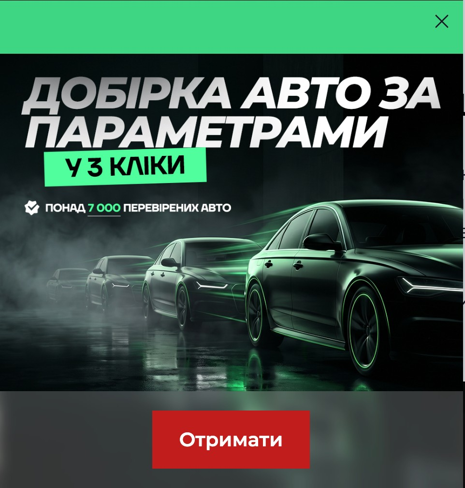
Поведінка
- Auto-open — спливає сама (не з кнопки сайту); частота / умови показу — окремо (session / once per page visit)
- Close ✕ або клік по overlay — закриває
- «Отримати» → зовнішнє посилання на Telegram bot (target _blank / deep link)
- Може зʼявлятись на home, /cars/, /cars/{slug}/ тощо — один shared компонент
Контент (з скріна)
- Заголовок: добірка авто за параметрами
- Badge: у 3 кліки
- Trust: понад 7 000 перевірених авто
Патерн той самий (auto-open · close · CTA → Telegram). Окремий desktop-скрін додамо, коли буде файл.
2. Головна · шапка й меню
Сторінка: https://www.grandcar.ua/ (та сама шапка на інших URL — дубль layout).
2.1. Десктоп — повна шапка
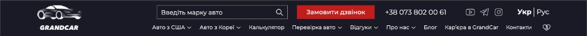
Верхній ряд
- Logo GRANDCAR
- Пошук «Введіть марку авто»
- Кнопка «Замовити дзвінок»
- Телефон +38 073 802 00 61
- Соцмережі
- Укр | Рус
Нижній ряд (навігація)
- Авто з США ▾ · Авто з Кореї ▾
- Калькулятор
- Перевірка авто ▾ · Відгуки ▾ · Про нас ▾
- Блог · Кар’єра · Контакти
- Обране (серце + число)
2.2. Десктоп — пошук (live / autocomplete)
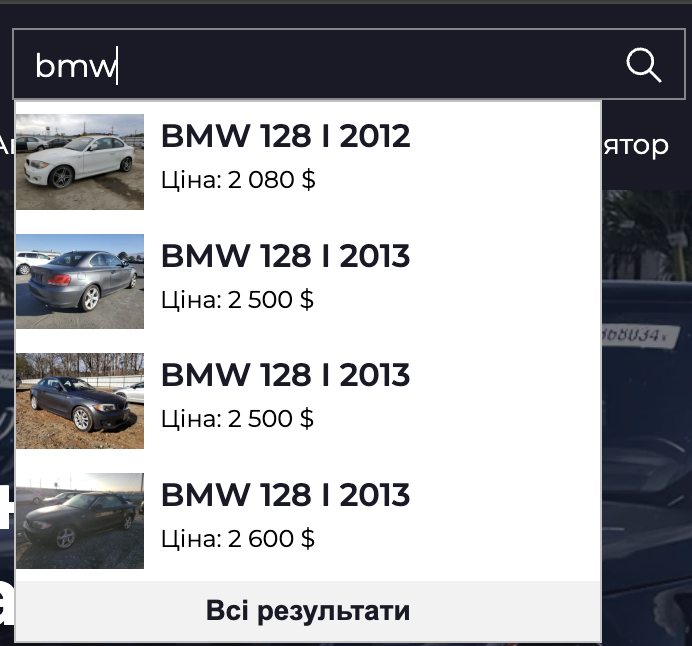
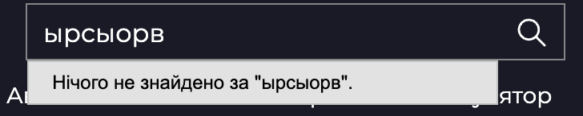
Підкомпоненти / стани пошуку
- Поле введення + іконка лупи
- Loader під час запиту
- Випадаючий список: міні-картка (фото + назва/рік + «Ціна: … $»)
- Футер списку: посилання «Всі результати» → повна сторінка пошуку
- Empty: світлий блок «Нічого не знайдено за "запит"» (той самий текст на мобайлі)
2.3. Десктоп — перемикач мови
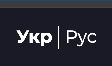
2.4. Десктоп — випадаюче меню навігації
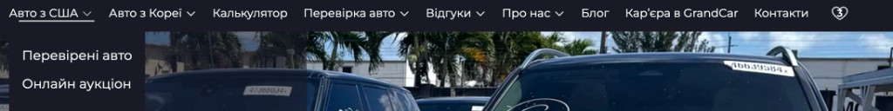
Той самий патерн dropdown для пунктів з ▾ (Корея, Перевірка авто, Відгуки, Про нас).
2.5. Мобайл — бар шапки
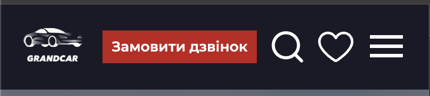
Відмінність від десктопу
- Немає видимого поля пошуку / телефону / соцмереж / мови в барі
- Пошук і меню — через іконки; контакти й мова — у drawer
2.6. Мобайл — меню (drawer)
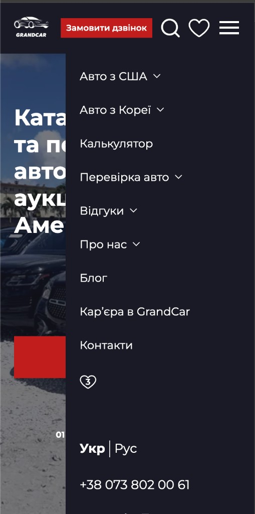
2.7. Мобайл — розкриття пункту (акордеон)
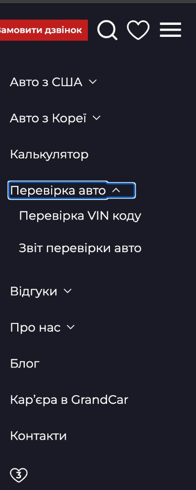
Перевикористання
Один компонент NavItem / Accordion: на десктопі — dropdown під пунктом, на мобайлі — розкриття в списку. Ті самі пункти меню з даних.
2.8. Мобайл — низ меню (мова, телефон, соцмережі)
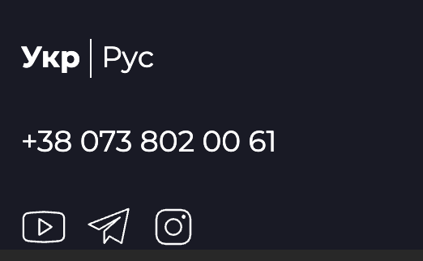
2.9. Мобайл — sticky пошук
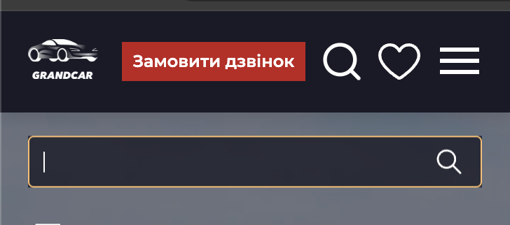
Поведінка
- Відкривається іконкою пошуку в барі (не inline як на десктопі)
- Поле «липне» під шапкою (sticky) поверх контенту
- Той самий Search-компонент: input + лупа + dropdown / empty / loader
2.10. Мобайл — пошук empty
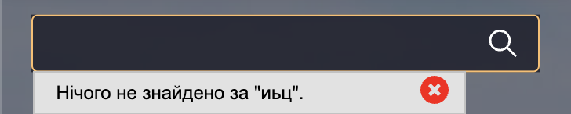
2.11. Мобайл — випадаючий список карток
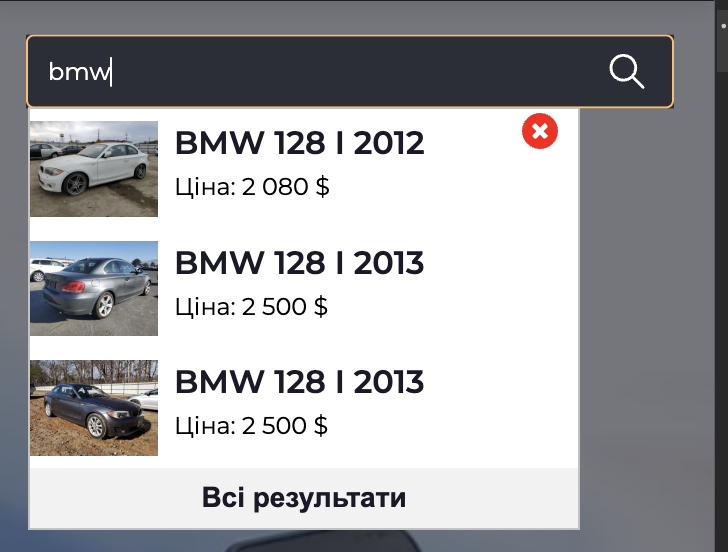
Перевикористання Search
Один Search: стани idle / loading / results / empty. Desktop — поле в шапці; mobile — sticky під баром. Картка результату й empty-текст спільні.
Підсумок по Home header
| Блок | Desktop | Mobile | Нотатка |
|---|---|---|---|
| Header bar | 2 ряди | 1 компактний ряд | Один Header, два layout |
| Search | Inline + dropdown / empty | Іконка → sticky поле + той самий dropdown / empty | Loader · results · empty · «Всі результати» · × |
| Main nav | Horizontal + dropdown | Drawer + accordion | Спільне дерево пунктів |
| Lang / phone / social | У шапці | У низу drawer | Одні й ті самі компоненти |
| Favorites | У ряду меню | Іконка бару + рядок у меню | Лічильник з localStorage |
| CTA дзвінок | Кнопка | Кнопка | → модалка §3 |
Інші блоки шапки — за потреби. Банер головної — §3.
Головна · промо каталогу (фото + title + CTA)
Пропущений блок головної: фото + заголовок + кнопка «Підібрати авто». Не плутати з InformativeBanner (§3) і BonusLeadForm (§11).
Desktop
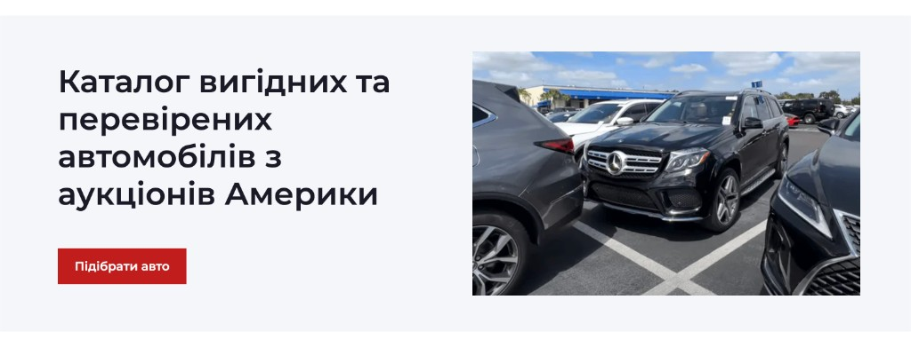
CatalogPromo
- Desktop: 2 колонки — текст+кнопка | зображення
- Primary CTA → каталог /cars/ (або підбір)
Mobile
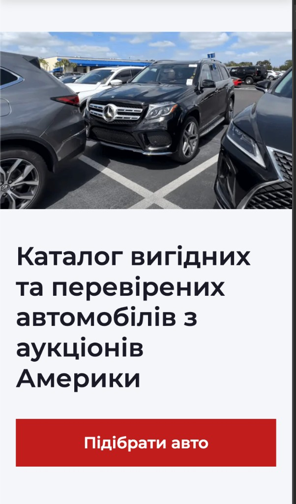
Mobile layout
Вертикально: image → headline → CTA (на всю ширину контенту).
4. Головна · картки клієнтів
Блок «успішні клієнти / угоди»: картка + слайдер без dots, з таймером автопрокрутки. (Чи є на інших сторінках — уточнимо пізніше.)
4.1. Десктоп — картка клієнта
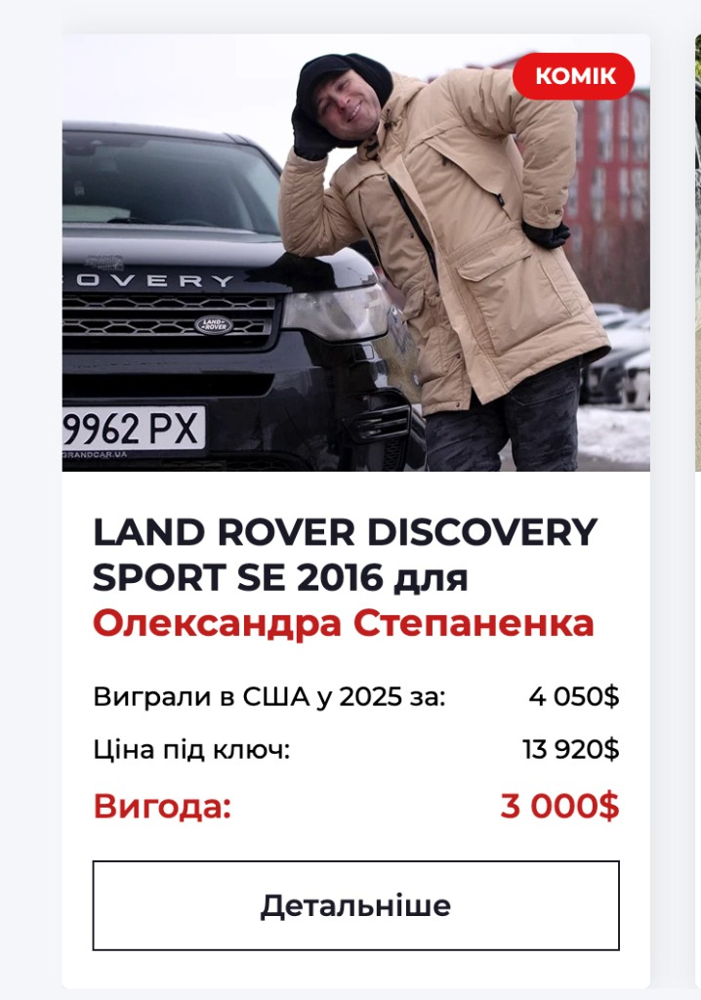
Поведінка картки
- Hover на картинку → змінюється фото (друге зображення)
- Червоний акцент: badge, ім’я клієнта, рядок «Вигода»
- Кнопка outline «Детальніше» (варіант Button, не primary-червона)
4.2. Десктоп — слайдер карток
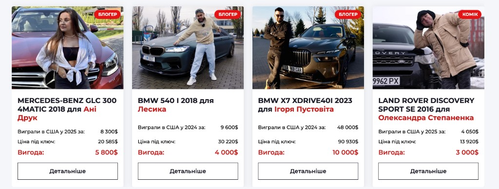
4.3. Badge на картці
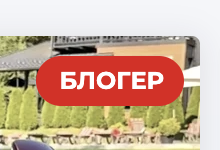
4.4. Мобайл — картка
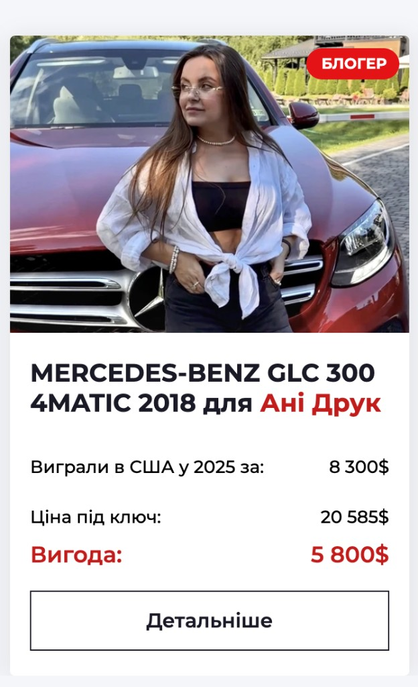
4.5. Мобайл — слайдер
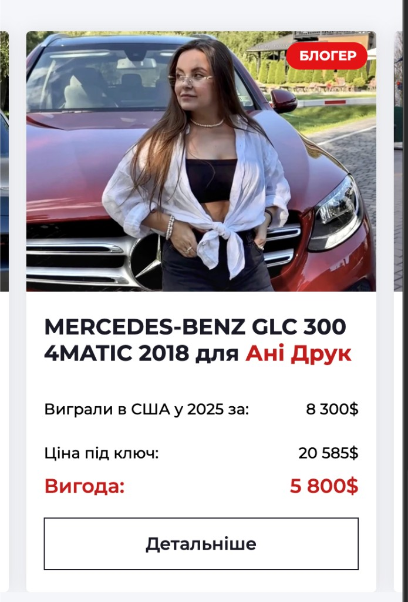
Підсумок
| Компонент | Desktop | Mobile | Нотатка |
|---|---|---|---|
| ClientCard | Картка в слайдері | Та сама | Hover → зміна фото |
| Badge | На фото | На фото | Текст з даних (роль/тег) |
| Button outline | «Детальніше» | «Детальніше» | Інший варіант від primary |
| ClientCardsSlider | Ряд, auto-scroll | Те саме | Dots немає; є таймер · той самий патерн слайдера, що для CarCard |
Картка авто — §5.
5. Головна · картка авто (CarCard)
Варіант картки лота/авто: фото, спеки, ціна в США, CTA. На мобайлі — у слайдері того самого типу, що картки клієнтів (§4): без dots, таймер.
5.1. Десктоп — картка
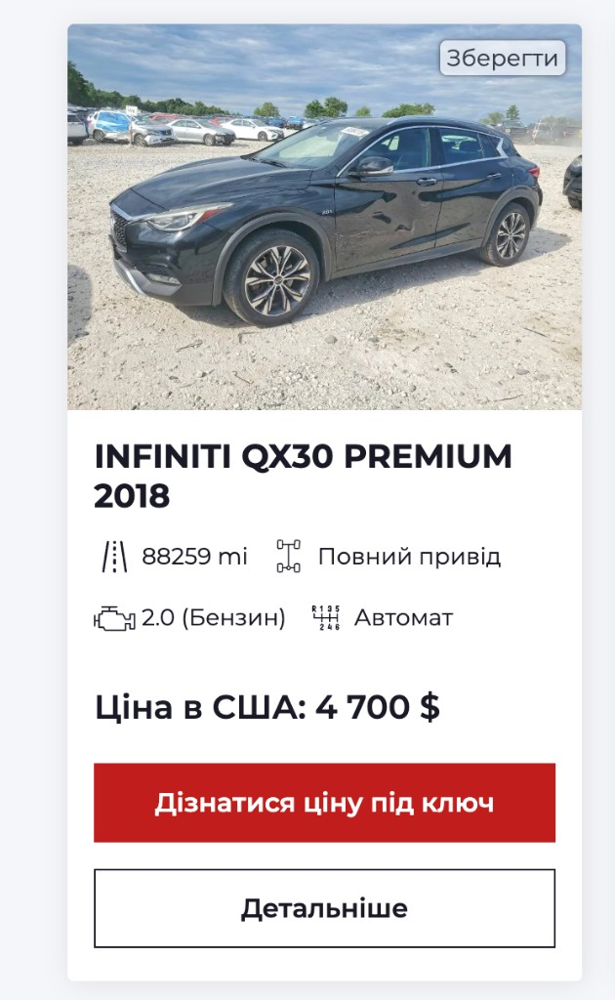
Поведінка
- Hover на картку (не лише на фото) — візуальний стан hover
- Primary: «Дізнатися ціну під ключ» · Outline: «Детальніше» (той самий Button-варіант)
- Спеки: пробіг · привід · двигун · КПП
5.2. Кнопка «Зберегти» (2 стани)
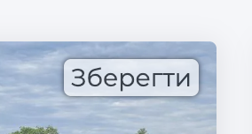
Зв’язок з Favorites
Toggle додає/знімає id авто в localStorage · оновлює лічильник серця в шапці (§2 / §3).
5.3. Мобайл — у слайдері
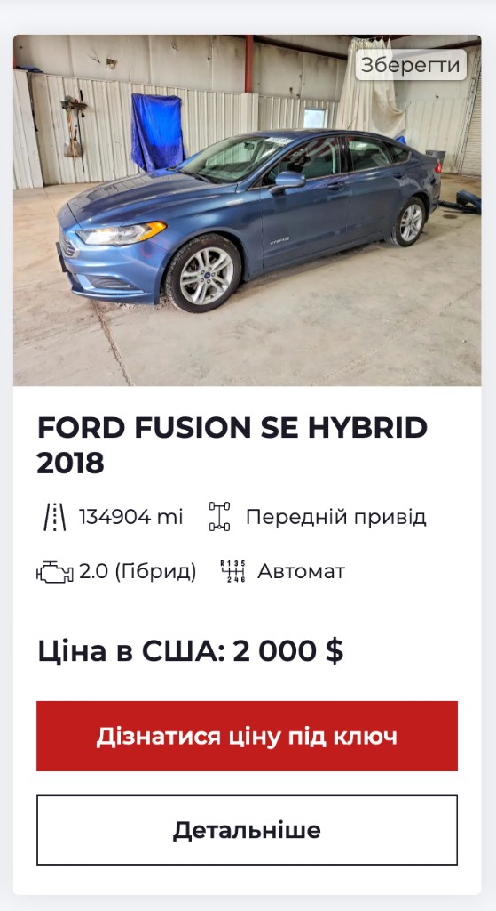
Слайдер (фіксуємо збіг)
- Без dots
- Таймер автопрокрутки
- Peek сусідніх карток — як у блоці клієнтів
- Один SharedCardsSlider / той самий патерн, різний item (ClientCard vs CarCard)
Підсумок
| Компонент | Desktop | Mobile | Нотатка |
|---|---|---|---|
| CarCard | Картка (hover) | У слайдері | Спеки + 2 CTA |
| SaveButton | На фото | На фото | inactive / active ↔ Favorites |
| CarCardsSlider | — | Ряд карток | = патерн ClientCardsSlider |
Кнопки / лінки / форма підбору — §6.
6. Головна · кнопки, лінки, feature, форма підбору
Спільні контролі після блоків карток: CTA «більше авто», текстові лінки, пункт переваг, лід-форма «Отримати підбір».
6.1. Кнопка «Дивитись більше авто»
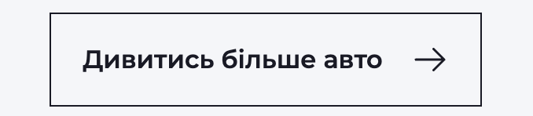
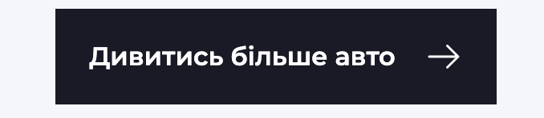
Button (з іконкою)
Той самий сімейство Button: слот іконки праворуч. Mobile виглядає подібно — звірити в DevTools.
6.2. TextLink «Більше про Grand Car»
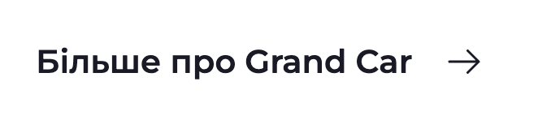
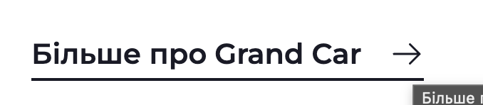
На мобайлі схоже; точні відмінності — через DevTools.
6.3. FeatureItem (іконка + title + текст)
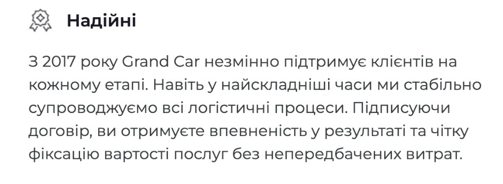
6.4. Кнопка submit форми «Отримати підбір»
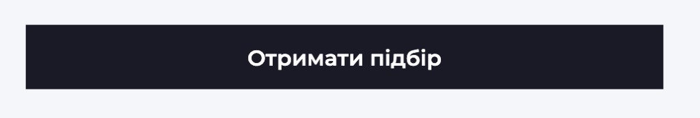
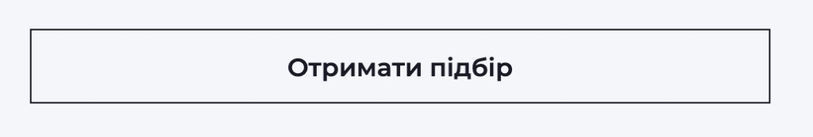
6.5. LeadForm — форма підбору
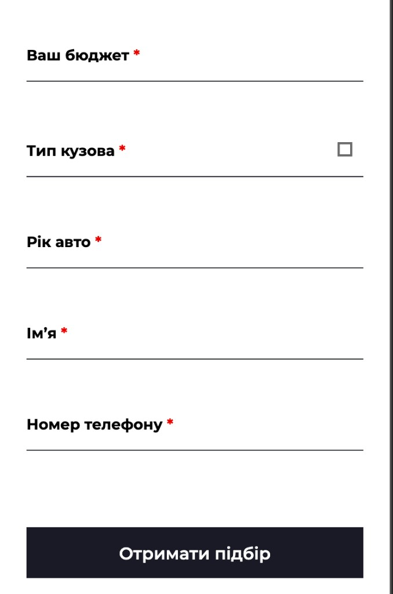
6.6. Поля форми
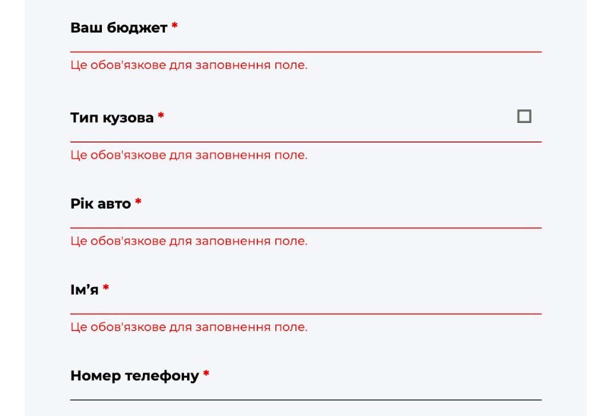
Типи полів
- number — бюджет
- select — тип кузова (зараз дефолтний select; можна замінити на кастомний)
- text — рік, ім’я
- tel / PhoneInput — номер (як у модалці дзвінка)
6.7. Форма + валідація порожніх полів
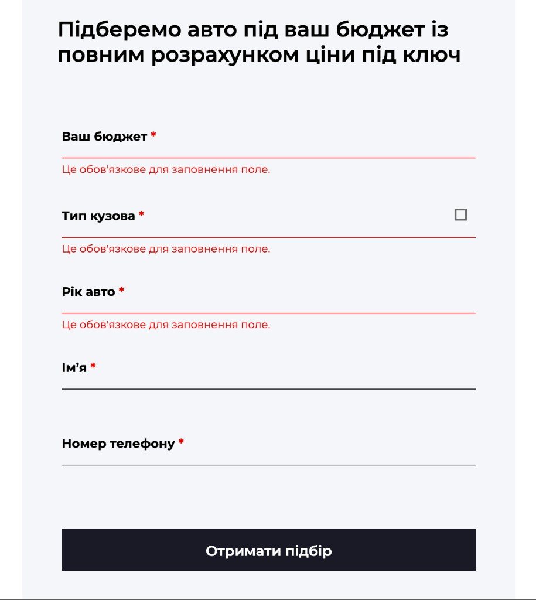
Валідація
Той самий патерн Input error, що в CallbackModal (§3): * обов’язкове · червона підкреслення · текст помилки.
Підсумок
| Компонент | Стани | Нотатка |
|---|---|---|
| Button + icon | default / hover | Слот іконки; mobile ≈ desktop (DevTools) |
| TextLink | default / hover | Стрілка; mobile звірити |
| FeatureItem | — | icon + title + body |
| FormSubmit | default / hover | «Отримати підбір» |
| LeadForm + fields | idle / error | Select native (swap → custom OK) |
Етапи купівлі / IconText — §7.
7. Головна · IconText і етапи (Steps / Progress)
Іконка+текст і блок «Етапи купівлі…». Mobile: та сама поведінка, можлива різниця лише в розмірах.
7.1. IconText
7.2. Блок етапів + Progress (desktop)
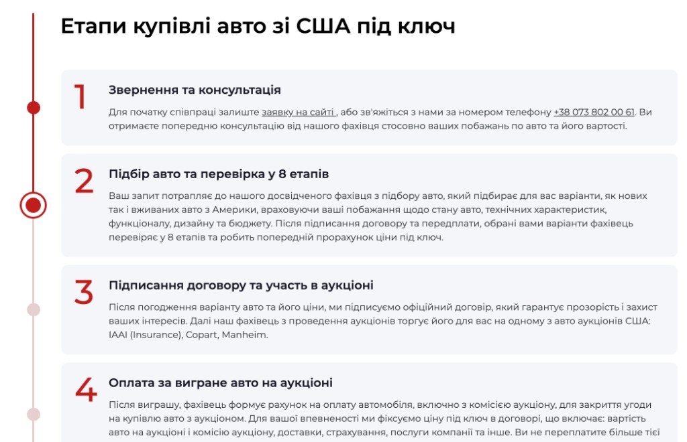
7.3. Progress (лінія / маркери)
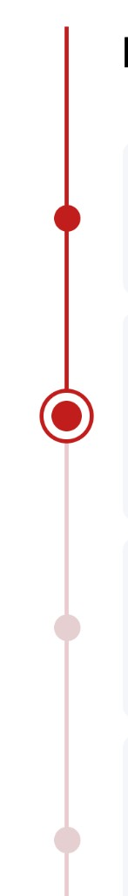
Поведінка Steps / Progress
- Активується при скролі
- Працює в обидві сторони: вниз і вгору
- Mobile — те саме; відрізняються лише розміри
7.4. StepDescription
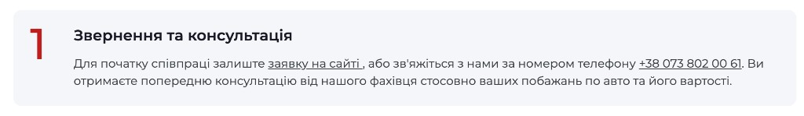
Слоти StepDescription
- number — номер етапу
- title
- text — rich: звичайний текст + посилання + компонента телефону (tel:)
Підсумок
| Компонент | Desktop | Mobile | Нотатка |
|---|---|---|---|
| IconText | Іконка + текст | Ідентично | Можлива різниця розмірів |
| Progress | Вертикальна лінія | Те саме | Scroll ↑↓ |
| Steps | Список етапів | Те саме | Активація з Progress |
| StepDescription | Картка етапу | Те саме | number · title · text(+link, Phone) |
Картки відгуків — §8.
8. Головна · картки відгуків (ReviewCard)
Картка з YouTube-відео: прев’ю → плеєр, fullscreen вбудований у плеєр. Desktop-слайдер з кнопкою листання справа; mobile — той самий патерн слайдера, що CarCards (§5).
8.1. ReviewCard — прев’ю
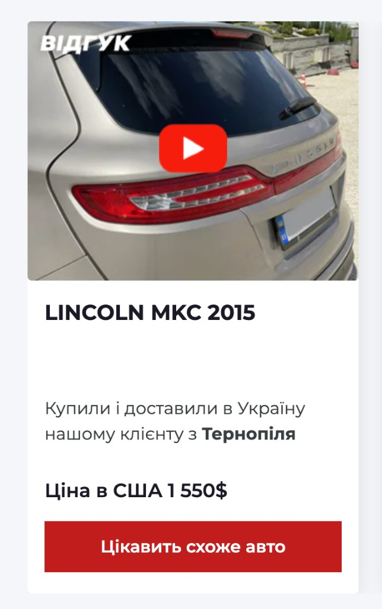
8.2. Плеєр (YouTube embed)
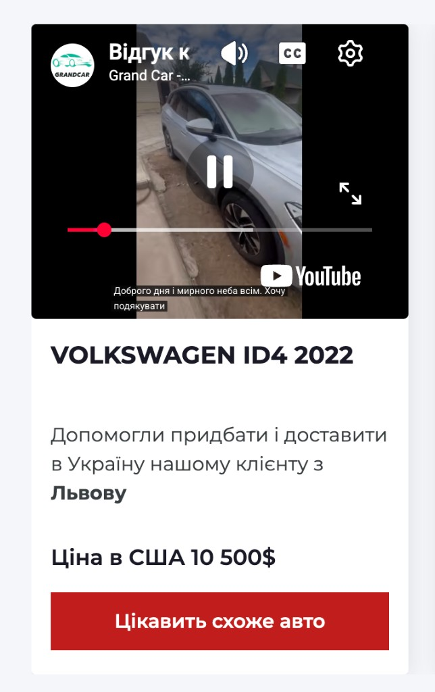
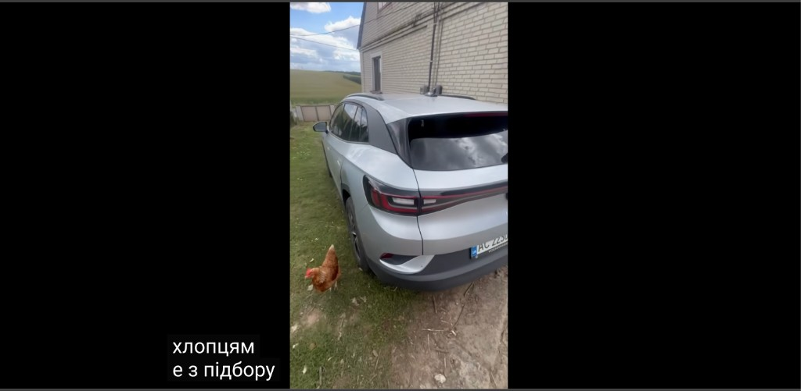
Відео
- Картка приймає YouTube (id / url)
- Повноекранний режим — з плеєра (не окремий кастомний оверлей)
8.3. Desktop — слайдер з кнопкою листання
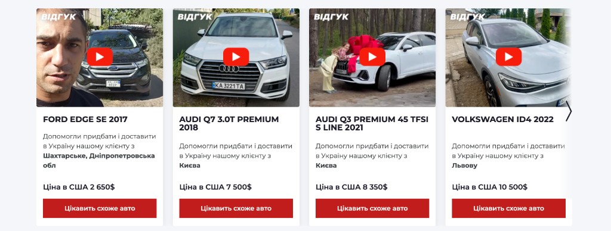
Відмінність від інших слайдерів
ClientCards / CarCards (§4–5): без dots, таймер, без стрілки. Reviews desktop: є кнопка листання справа.
8.4. Мобайл — картка в слайдері
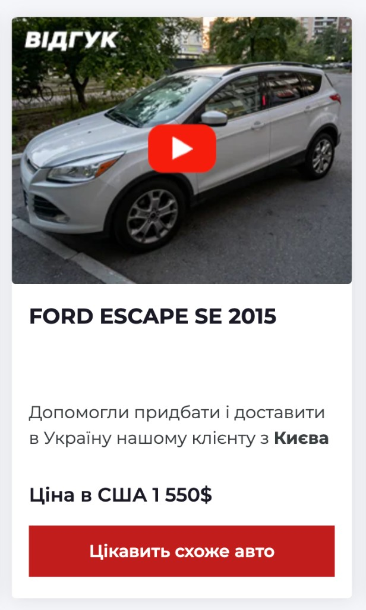
Mobile slider
Той самий патерн, що картки авто / клієнтів на мобайлі (без dots, peek / таймер — як зафіксовано раніше).
Підсумок
| Компонент | Desktop | Mobile | Нотатка |
|---|---|---|---|
| ReviewCard | У слайдері | У слайдері | YouTube + CTA primary |
| YouTube player | Embed у картці | Те саме | Fullscreen з controls плеєра |
| ReviewsSlider | Стрілка → справа | = CarCardsSlider | Desktop ≠ mobile nav |
Google-відгуки (текст) — §9. Не плутати з YouTube-картками вище.
9. Головна · Google-відгуки (текст)
Окремий від §8 блок: текстові відгуки (Google), слайдер з автопрокруткою, режим повного перегляду історії (ReviewViewer).
9.1. Desktop — слайдер (новий)
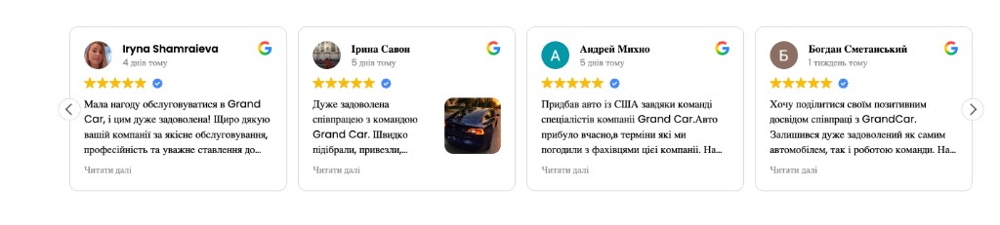
9.2. ReviewViewer — повноекранний режим (desktop)
Компонент ReviewViewer
Окремий режим перегляду історії відгуків: backdrop + скрол + close. Відкривається з «Читати далі» на картці в слайдері.
9.3. Картка у fullscreen (desktop)
9.4. Мобайл — відкритий режим перегляду
9.5. Мобайл — слайдер (не fullscreen)
9.6. GoogleReviewCard у слайдері
Склад картки
- Avatar (фото або літера) · ім’я · час · Google G
- 5 зірок + verified badge
- Текст (обрізаний у слайдері) · опційно міні-фото
- «Читати далі» відкриває ReviewViewer
Підсумок
| Компонент | Desktop | Mobile | Нотатка |
|---|---|---|---|
| GoogleReviewsSlider | ← → + auto-scroll | Слайдер + bar-dots | Новий слайдер ≠ §8 |
| GoogleReviewCard | У слайдері | У слайдері | «Читати далі» |
| ReviewViewer | Список · × top-right | Картка · «Закрити» bottom | Скрол історії |
| SliderDots (bar) | — | Трек + thumb | Ще один варіант dots |
Коротка форма / FAQ / інфоблок / новини — §10.
10. Головна · коротка форма, FAQ, інфоблок, новини
Ще один варіант форми (менше полів), акордеон FAQ, статичний інфоблок, новини в слайдері (desktop з SlideCounter; mobile — як video-відгуки §8, без dots).
10.1. ContactForm (коротка)
Vs LeadForm (§6)
Ті самі Input / PhoneInput / FormSubmit · інший набір полів і CTA. Валідація — той самий патерн.
10.2. Accordion (FAQ)
AccordionItem
Header (питання + chevron) · body (відповідь). Патерн близький до nav-акордеону в моб. меню (§2), інший UI.
10.3. InfoBlock (інформативний)
10.4. NewsCard + NewsSlider (desktop)
10.5. NewsCard mobile
Слайдери новин
- Desktop: горизонтальні картки + SlideCounter (як hero)
- Mobile: без dots · той самий патерн, що слайдер відео-відгуків на мобайлі
Підсумок
| Компонент | Desktop | Mobile | Нотатка |
|---|---|---|---|
| ContactForm | 3 поля + submit | Те саме | Коротший варіант LeadForm |
| Accordion / FAQ | Список | Список | ▾ open/close |
| InfoBlock | Текст + CTA + image | — | ≠ таймер InformativeBanner |
| NewsCard | Horizontal | Vertical | Дата · title · excerpt |
| NewsSlider | + SlideCounter | Без dots (= §8 video) | Dots = той самий компонент що банер |
ExpandText / банер бонусу — §11.
11. Головна · ExpandText і банер «отримати бонус»
Розгортання довгого тексту («Детальніше» / «Приховати») і ще один банер з лід-формою бонусу (ім’я + email + checkbox згоди).
11.1. ExpandText (Детальніше / Приховати)
Поведінка
- Toggle expand / collapse довгого контенту (SEO / опис)
- Mobile — та сама поведінка; стилізація трохи відрізняється
11.2. BonusBanner (desktop)
11.3. Checkbox + label
11.4. BonusForm
Поля
- Input text — ім’я
- Input type=email — «Ваша пошта» (новий тип у каталозі)
- Checkbox + label — згода
- FormSubmit — «Отримати бонус»
11.5. Мобайл — усі елементи
Підсумок
| Компонент | Desktop | Mobile | Нотатка |
|---|---|---|---|
| ExpandText | Детальніше / Приховати | Те саме | Стилі трохи інші |
| BonusBanner | Фон + текст + форма | Стек усіх елементів | ≠ InformativeBanner (§3) |
| BonusForm | 2 колонки ім’я|email | Стек | + email Input |
| Checkbox | З лейблом | Те саме | Згода на обробку / сповіщення |
13. Каталог · /cars/
Лістинг перевірених авто зі США: grandcar.ua/cars/. Breadcrumb, селекти «на сторінці / сортування», картка лота (горизонтальна → вертикальна на мобайлі), «Показати ще», пагінація.
13.1. Breadcrumb — desktop
Breadcrumb
- Лінк «Головна» → / · роздільник «/» · поточна сторінка (не лінк)
- Спільний компонент для внутрішніх сторінок (не лише /cars/)
13.2. Breadcrumb — mobile
13.3. Селекти «На сторінці» / сортування
PageSizeSelect + SortSelect
- Desktop: кастомний вигляд тригера (border + chevron)
- Mobile: той самий тригер-UI, але відкриває нативний select ОС — без кастомного dropdown
- Не плутати з повним фільтр-блоком каталогу (окремі скріни пізніше)
13.4. Картка авто — desktop (горизонтальна)
Vs CarCard на головній (§5)
- Layout: горизонтальний (фото | контент), не вертикальна картка слайдера
- SaveButton — той самий (§5.2): toggle обраного ↔ Favorites
- Hover на фото — змінює зображення (наступне фото лота), не лише visual hover картки
- CTA ті самі: «Дізнатися ціну під ключ» · «Детальніше»
- Порядок: title → ціна → спеки → кнопки (на home price була нижче спеків у слайдер-варіанті)
13.5. Картка авто — mobile (вертикальна)
CatalogCarCard
Один компонент, два layout: horizontal (desktop) / vertical (mobile). Не слайдер головної — у лістингу картки в сітці/списку.
13.6. Кнопка «Показати ще» — default
ShowMoreButton
- Текст у коді: «Показати ще» (на скріні опечатка «Пказати» — не копіювати)
- Довантажує наступну порцію лотів без зміни URL (або з sync query — уточнити з BE)
13.7. «Показати ще» — hover
13.8. Пагінація — default / active
13.9. Пагінація — hover
Pagination
- Квадратні кнопки з легким radius · active = чорна рамка + жирний номер
- Hover на inactive → той самий акцент, що active
- Ellipsis «…» між ближніми й останньою сторінкою
13.10. «Показати ще» — mobile
13.11. Пагінація — mobile
13.12. Фільтр-акордеон — desktop

CatalogFilterAccordion
- Стек акордеонів: заголовок + chevron · роздільники між секціями
- Відкрита «Марка»: Input «Пошук» (іконка лупи) · список Checkbox (Acura…BMW) · лінк expand
- Закриті: «Рік випуску» · «Ціна в США $» · «Пробіг (миль)»
- Не плутати з PageSize/Sort (§13.3) — це сайдбар фільтрів лотів
13.13. «Показати більше» (у списку опцій фільтра)
FilterOptionsExpand (≠ ShowMoreButton §13.6)
- Текстовий лінк під checkbox-списком, не outline-кнопка «Показати ще» лістингу
- Toggle: «Показати більше» ↔ «Показати менше»
13.14. «Показати менше»
13.15. Фільтр-акордеон — mobile (вміст)
Вміст = Desktop
Секції / checkbox / «більше·менше» — як на десктопі. Оболонка мобайлу — кнопка «Фільтри» + fullscreen-модалка (§13.19–13.21).
13.16. Інші секції акордеону + «Скинути фільтри» (desktop)
Синхронізація з URL
- Активні фільтри додаються в URL (query) і знімаються з URL при знятті опції
- UI (чекбокси, range тощо) ↔ URL — одне джерело стану
- «Скинути фільтри» очищає і URL, і всі активні контролы (чекбокси / range / чіпи)
13.17. ResetFiltersButton — default (desktop)
13.18. ResetFiltersButton — hover (desktop)
ResetFiltersButton
Повний скид: query URL → порожній від фільтрів · усі чекбокси/range/чіпи → inactive.
13.19. Мобайл — кнопка відкриття фільтрів
MobileFiltersTrigger
На мобайлі сайдбар-акордеон не в потоці сторінки — зʼявляється після тапу на цю кнопку.
13.20. Мобайл — модалка на весь екран (зліва)
MobileFiltersModal
- Повноекранна панель · анімація зліва
- Header: «Фільтри» + Close
- Body: той самий акордеон секцій (Марка…Обʼєм двигуна)
- Footer actions — §13.21
13.21. Мобайл — низ модалки: скинути + Показати
Mobile filter actions
- Скинути фільтри — той самий повний скид (URL + UI), що desktop Reset
- Показати — застосувати / закрити модалку й показати результати лістингу
13.22. Active filter chips (tips) — mobile
FilterChip
Один чіп = одне активне значення/діапазон. ✕ → remove цього фільтра. Не плутати з FooterTagChip (§12).
13.23. Active filter chips — desktop (+ «Скинути» першою)
Desktop chips row
- Якщо є ≥1 активний фільтр — першим у списку tips зʼявляється Скинути фільтри (повний скид)
- Далі — окремі FilterChip з ✕
13.24. Мобайл — активні фільтри всередині модалки
Стан у модалці
Чіпи під «Фільтри» віддзеркалюють активні значення; зняття ✕ / чекбокса / range оновлює URL. Range-секції (рік, ціна) — dual-handle slider + підпис діапазону (§13.28+).
13.25. Пошук усередині фільтра — empty
FilterSearchInput
- Живий пошук опцій усередині відкритої секції акордеону (напр. Марка)
- Підтягує знайдені пункти в список чекбоксів (§13.27)
- Desktop = Mobile — той самий вигляд і поведінка
13.26. Пошук — крестик скиду тексту
Clear query
✕ очищає value інпута й повертає повний список опцій секції. Ідентично на мобайлі.
13.27. Пошук — знайдені опції в акордеоні
Filter of options
Список опцій фільтрується за введенням; чекбокс і FilterOptionsExpand (§13.13) працюють як завжди.
13.28. Range slider — desktop
FilterRangeSlider
- Два thumbs (min / max) · активний відрізок сірий
- Під слайдером текст від — до (оновлюється при drag)
- Використання: рік, ціна, пробіг тощо · sync з URL
13.29. Range slider — обидва напрямки
Двосторонній діапазон
Лівий thumb = від · правий = до · можна звужувати з обох боків; значення в підписі й у query.
13.30. Range slider — mobile
13.31. FilterCheckbox — active / inactive
FilterCheckbox
Квадрат з легким radius · inactive = порожній outline · active = чорна галочка. Використовується в опціях CatalogFilterAccordion; стан ↔ URL.
13.32. ContentAccordion (звичайний) — collapsed
⚠️ Два різні акордеони (не плутати)
- CatalogFilterAccordion (§13.12+) — плоский сайдбар: роздільники, search, checkbox, range · без «карток»
- ContentAccordion (тут) — окремі білі картки з тінью/відступом · title + текстовий body · FAQ / контент на /cars/
- Стилізація різна · не один shared skin з двома режимами «на око»
- Близький патерн до FAQ на home (§10.2), але фіксуємо як ContentAccordion на каталозі
13.33. ContentAccordion — expanded
13.34. ContentAccordion — mobile
13.35. «Детальніше» — default
13.36. «Детальніше» — hover
13.37. Після кліку — «Приховати»
13.38. «Приховати» — hover
DetailsToggle
- Toggle: Детальніше ↓ ↔ Приховати ↑
- Hover в обох станах = underline
- Не плутати з «Детальніше» на CarCard (§5 / §13.4) — там outline-кнопка, тут link-toggle контенту
13.39. TitleText — заголовок + параграфи
TitleText (гнучкий контент)
- Слоти: title + body (параграфи, списки…)
- Може містити таблицю (§13.40) — закладати rich content, не лише plain string
13.40. TitleText — з таблицею
13.41. TitleText — mobile
Responsive
Структура desktop = mobile; масштабуються типографічні розміри. Body може бути p, ul, table.
13.42. FeedbackSplit — форма + картинка
CatalogFeedbackForm
- Layout 50/50: media | form
- Поля: Імʼя * · Номер телефону * (underline inputs)
- Disclaimer під полями · primary CTA «Замовити підбір авто»
13.43. CTA форми — без hover
NoHoverPrimaryButton
Фіксуємо: для цієї CTA на /cars/ hover-ефект відсутній (на відміну від ShowMore / ResetFilters).
13.44. BonusLeadForm — як на головній
Reuse з home
- Компонент той самий, що BonusBanner / бонус-форма на головній (§11)
- Контент (заголовок / список переваг) може відрізнятись за CMS, UI-скелет спільний
- CTA «Отримати бонус» — також без окремого hover (як на home / як NoHover pattern вище)
13.45. Shared Header + Footer на /cars/
Повторювані оболонки сторінки
13.46. TurnkeyPriceModal — desktop
TurnkeyPriceModal
- Тригер: primary кнопка на картці авто (§13.4 / §5)
- Desktop: split — фото з картки | форма (імʼя · телефон · disclaimer · «Отримати прорахунок»)
- Рядок «Авто: {TITLE}» з контексту лота
- Close ✕ · overlay
13.47. FormAlert — desktop (валідація)
FormValidationAlert
- Не native browser alert — окремий UI-компонент
- Показується у шапці / зверху viewport після кліку «Отримати прорахунок» при незаповнених required
- Білий фон · червоний текст · легка тінь / нижня червона риска
13.48. TurnkeyPriceModal — mobile (без фото)
Mobile layout
На мобайлі колонка з фото лота прихована — лишається formal panel. Контекст авто — текстовим рядком.
13.49. FormAlert — mobile
Підсумок
| Компонент | Desktop | Mobile | Нотатка |
|---|---|---|---|
| Breadcrumb | 1 рядок | Може wrap | Спільний для внутрішніх URL |
| PageSizeSelect / SortSelect | Кастомний тригер | Тригер той самий · native menu | Частина фільтр-бару, не весь фільтр |
| CatalogCarCard | Horizontal | Vertical | SaveButton = §5 · hover фото = swap image |
| ShowMoreButton | Outline → brand hover | = Desktop | «Показати ще» + refresh icon |
| Pagination | 1…N + ellipsis | = Desktop | Active / hover = чорна рамка |
| CatalogFilterAccordion | У сайдбарі | У MobileFiltersModal | ≠ ContentAccordion за стилем |
| ResetFiltersButton | Під акордеоном · hover | У футері модалки (text) | Чистить URL + усі контроли |
| MobileFiltersTrigger / Modal | — | Кнопка → slide-in зліва | + «Показати» застосувати |
| FilterChip (tips) | Ряд · першим «Скинути…» | На сторінці + у модалці | ✕ знімає один фільтр |
| FilterSearchInput | У секції акордеону | = Desktop | ✕ чистить лише query пошуку |
| FilterRangeSlider | Dual-handle + від—до | = Desktop | Обидва thumbs · URL sync |
| FilterCheckbox | Checked / unchecked | = Desktop | Опції фільтра · URL sync |
| ContentAccordion | Картки FAQ/текст | Те саме | ≠ Filter accordion skin |
| DetailsToggle | Детальніше ↔ Приховати | Те саме | Hover = underline |
| TitleText | Title + p / table / list | Менші шрифти | Гнучкий body slot |
| CatalogFeedbackForm | Split image + form | (адаптив пізніше) | CTA без hover |
| BonusLeadForm | = §11 home | = §11 | Shared component |
| SiteHeader / SiteFooter | §2 / §12 | §2 / §12 | Повторюються на /cars/ |
| TurnkeyPriceModal | Фото + форма | Лише форма (без фото) | З CTA картки «ціна під ключ» |
| FormValidationAlert | У шапці | = Desktop | Submit з порожніми полями |
Сторінка айтема авто — §14. Інші URL (калькулятор, VIN…) — далі за скрінами.
14. Сторінка авто · /cars/{slug}/
Картка лота / «Детальніше» з каталогу (§13) або з головної (§5) ведуть сюди, напр. /cars/toyota-corolla-le-2025/.
Повторювані блоки (як на home /cars)
14.1. Breadcrumb — глибокий шлях
Breadcrumb (глибший за /cars/)
- Той самий компонент, що §13.1–13.2, але з додатковими сегментами (make · model · offer title)
- Поточний пункт — bold / не лінк; предки — сірі лінки
- Mobile = desktop (може wrap)
14.2. Rating — empty («Ваша оцінка»)
14.3. Rating — active (середнє + голоси)
14.4. Rating — hover / вибір (якщо ще не оцінили)
OfferRating
Стани: empty · hover preview · user vote · aggregate (score + count). Pluralization «голос/голоси…».
14.5. OfferGallery — preview
OfferGallery
- Slider головне фото · prev/next
- SaveButton — той самий, що §5 / §13
- Thumb strip · останній thumb з overlay лічильника
- Fullscreen → §14.6 / §14.8
14.6. OfferGallery — fullscreen (desktop)
14.7. TurnkeyPriceModal — з сторінки лота
Reuse
Не новий компонент — той самий modal + FormValidationAlert (§13.46–13.49).
14.8. OfferGallery — fullscreen mobile
14.9. OfferSummary — title / price / CTA / share
14.10. Copy link + tooltip
CopyLinkButton
Копіює URL сторінки лота в clipboard · показує короткий feedback «Посилання скопійовано».
14.11. SpecsList — характеристики
14.12. SpecRow — іконка · title · value
SpecRow
- Приймає:
icon·title·value - SpecsList = flex/stack з цих блочків
- Mobile: той самий патерн · можливі інші font-size / розташування колонок
14.13. EquipmentBlock — комплектація
14.14. EquipmentPipeList
EquipmentBlock
Приймає title + масив рядків → рендер через « | ». Desktop/mobile — той самий layout, можуть відрізнятись розміри шрифту.
14.15. OfferDescription — collapsed (DetailsToggle)
14.16. OfferDescription — expanded
Vs TitleText / DetailsToggle
Той самий патерн expand/collapse, що §13.35–13.38 / §13.39, у контексті «Опис» лота (truncated + toggle).
14.17. RelatedCarsSlider — слайдер карток
RelatedCarsSlider
- Item = CarCard (§5) — не нова картка, reuse
- Desktop: горизонтальний слайдер + кнопка/шеврон справа (next)
- Mobile: звичайний слайдер · без кнопок · без dots (як CarCardsSlider / ClientCards на home §4–5)
14.18. ReviewsTeaser — grid + title + text + CTA
ReviewsTeaser
- Desktop: 2 колонки — image grid | title + paragraphs + button
- Mobile: стек зверху вниз: блок картинок → текст → кнопка · інші розміри фото
14.19. ReviewsTeaser CTA — default
14.20. ReviewsTeaser CTA — hover
14.21. BonusLeadForm + Header + Footer (повтор)
Повторювані оболонки на /cars/{slug}/
Підсумок · сторінка авто
| Компонент | Desktop | Mobile | Нотатка |
|---|---|---|---|
| Breadcrumb (deep) | Make / model / lot | = Desktop | Додаткові SEO-лінки |
| OfferRating | Empty / hover / active | Те саме | «Ваша оцінка» · голоси |
| OfferGallery | Preview + fullscreen | + zoom | SaveButton · counter |
| OfferSummary | Title · price · CTA · share | Те саме | CTA → TurnkeyPriceModal |
| CopyLinkButton | Icon + toast | Те саме | «Посилання скопійовано» |
| SpecRow / SpecsList | Icon · title · value | Font / layout tweaks | Flex рядки |
| EquipmentBlock | Title + pipe list | Font tweaks | Дані через «|» |
| OfferDescription | Truncate + DetailsToggle | Те саме | Детальніше ↔ Приховати |
| RelatedCarsSlider | CarCard + стрілка справа | Без кнопок · без dots | Reuse CarCard §5 |
| ReviewsTeaser | Grid | text + CTA | Images → text → CTA | CTA default/hover |
| Shared chrome | Header · Footer · Bonus | §2 / §12 / §11 | Як на /cars/ |
Аукціони — §15. Калькулятор / VIN — далі за скрінами.
15. Аукціони · /auctions/
Лістинг аукціонних лотів: grandcar.ua/auctions/. Багато блоків = reuse з /cars/ (§13); нові — DatePicker, AuctionTimer, TelegramCta.
Reuse з /cars/ і shared
- CatalogFilterAccordion — як §13.12+ (той самий акордеон фільтрів)
- PageSizeSelect / SortSelect — як §13.3
- ShowMoreButton + Pagination — як §13.6–13.11
- TurnkeyPriceModal — як §13.46+
- BonusLeadForm — §11 / §13.44
- Header / Footer — §2 / §12
15.1. Breadcrumb
15.2. Filter tips (активні фільтри)
15.3. DatePicker inputs (у фільтр-акордеоні)
15.4. DatePicker — відкритий календар
FilterDatePicker (нове для /auctions/)
- Два інпути range (from / to) + calendar popover
- Значення ↔ URL / tips chips (як інші фільтри)
- Акордеон фільтрів — той самий CatalogFilterAccordion + ця секція дат
15.5. TelegramCta — підписка на канал
TelegramCta
Окремо від PromoTelegramModal (авто-попап). Тут — in-page блок переходу на Telegram.
15.6. Page size + sort
15.7. AuctionCard
Vs CarCard / CatalogCarCard
- Базовий layout той самий (фото | контент · спеки · 2 CTA)
- Ціна може бути «під ключ — за запитом»
- Додано AuctionTimer під спеками
15.8. AuctionTimer
AuctionTimer
- active — countdown DD:HH:MM:SS до кінця лота
- inactive / ended — «Аукціон проведено» (лістинг і картка лота)
15.9. TurnkeyPriceModal
15.10. Show more + Pagination
15.11. BonusLeadForm + Footer
Підсумок · /auctions/
| Компонент | Нове? | Нотатка |
|---|---|---|
| Breadcrumb / Tips / Filter accordion | Reuse §13 | + DatePicker у фільтрах |
| FilterDatePicker | Нове | Inputs + open calendar |
| TelegramCta | Нове | In-page підписка (≠ auto modal) |
| PageSize / Sort / ShowMore / Pagination | Reuse §13 | Як на /cars/ |
| AuctionCard | CarCard + timer | Layout як каталог |
| AuctionTimer | Нове | active countdown · inactive «Аукціон проведено» |
| TurnkeyPriceModal / Bonus / Header / Footer | Reuse | §13 / §11 / §2 / §12 |
404 — §16. Калькулятор / VIN — далі за скрінами.
16. 404 · NotFound
Сторінка помилки «не знайдено». Layout: Header → NotFoundContent → BonusLeadForm → Footer. Desktop і mobile — однакова компоновка, менші розміри на мобільному.
Reuse
- SiteHeader — §2
- BonusLeadForm — §11
- SiteFooter — §12
16.1. NotFoundContent (desktop)
NotFoundContent
- Title · великий 404 з червоним X замість «0»
- Опис (сторінки немає / видалена / помилка URL)
- CTA → головна
16.2. HomeButton — default
16.3. HomeButton — hover
16.4. BonusLeadForm + Header / Footer
16.5. Mobile
Підсумок · 404
| Компонент | Нове? | Нотатка |
|---|---|---|
| NotFoundContent | Нове | Title · 4[X]4 · текст · HomeButton |
| HomeButton | Нове (або PrimaryButton variant) | default filled · hover outline |
| Header / Bonus / Footer | Reuse | §2 / §11 / §12 |
Лот аукціону — §17. Калькулятор / VIN — далі за скрінами.
17. Лот аукціону · /auctions/{id}/
Сторінка лота (приклад /auctions/52582686/). Layout близький до /cars/{slug}/ (§14): gallery + info справа · нижче блоки опису / SEO / схожі · reviews · bonus · footer.
Reuse з /cars/{slug}/ і shared
- OfferGallery — як §14.5+
- Праві info / CTA preview-блоки — той самий патерн що §14
- SimilarCarsSlider — як §14 (AuctionCard + timer/inactive)
- ReviewsTeaser — §14.18+
- BonusLeadForm · Header / Footer — §11 / §2 / §12
17.1. LotBadge + VinCopy — default (masked)
LotBadge / VinCopy
- LotBadge — outline box з номером лота
- VinCopy — masked VIN + copy icon · click → clipboard + feedback «лот скопійовано»
17.2. VinCopy — active / full
17.3. OfferGallery
17.4. AuctionData — desktop
AuctionData
Аукціон · локація · оновлено · стан · пошкодження · документи · час · ставка тощо.
17.5. AuctionData — mobile
17.6. LotDescription — desktop
17.7. LotDescription — mobile
LotDescription vs OfferDescription (§14)
Окремий блок з title+divider і inline highlight ключів (не expand/collapse «Опис:» з /cars/).
17.8. ModelRange — desktop
ModelRange · mobile
Скрін 9 (за описом): та сама компонента, інша сітка/колонки. Окремий crop у цьому батчі не додавався — поведінка: fewer columns / wrap.
17.9. PopularLots — default
17.10. PopularLots — hover
PopularLots
Горизонтальний scroll · 3 rows · links на інші лоти · hover як ModelRange.
17.11. SimilarCarsSlider
17.12. ReviewsTeaser + Bonus + Footer
Підсумок · /auctions/{id}/
| Компонент | Нове? | Нотатка |
|---|---|---|
| LotBadge / VinCopy | Нове | masked · full · copy feedback |
| OfferGallery + side info | Reuse §14 | Той самий патерн |
| AuctionData | Нове | desktop 3-col · mobile list |
| LotDescription | Нове | title · divider · bold keys |
| ModelRange | Нове | link grid · hover red · mobile layout |
| PopularLots | Нове | 3-row h-scroll · hover |
| SimilarCars / Reviews / Bonus / Footer | Reuse | §14 / §11 / §12 |
Корейські аукціони — §18. Калькулятор / VIN — далі за скрінами.
18. Корейські аукціони · специфічні блоки
Компоненти, характерні для корейських лотів (Encar тощо): tooltip ціни, стан кузова, історія, страхові випадки, власники / пробіг. Базовий layout сторінки лота — як §17.
18.1. PriceRelevanceTooltip
PriceRelevanceTooltip
- Trigger: круглий «i» біля ціни в картці/лістингу
- Popover: shadow · caret вниз · icon + текст
18.2. BodyConditionReport — desktop
BodyConditionReport
Діаграми кузова + легенда ремонтів/пошкоджень + note (напр. «Encar не позначив…»).
18.3. BodyConditionReport — mobile
18.4. HistoryOverview — desktop
18.5. HistoryStatusCard — clear
18.6. HistoryStatusCard — detected
HistoryStatusCard
- Стани:
clear(green) ·detected(red + count) - Наповнює HistoryOverview
18.7. HistoryOverview — mobile
18.8. InsuranceHistory — empty (desktop)
18.9. InsuranceHistory — empty (mobile)
18.9a. InsuranceHistory — filled (desktop)
18.9b. InsuranceHistory — filled (mobile)
InsuranceHistory
- empty — dashed placeholder
- filled — dark header table · рядки подій Encar · суми в ₩
- Mobile: h-scroll як MileageInfo
18.10. OwnersInfo + MileageInfo — desktop
OwnersInfo / MileageInfo
- OwnersInfo — № · дата зміни власника
- MileageInfo — дата · пробіг · джерело (Encar тощо)
- Dark header bar · light rows
18.11. MileageInfo — mobile (h-scroll)
Підсумок · Korea extras
| Компонент | Нове? | Нотатка |
|---|---|---|
| PriceRelevanceTooltip | Нове | info · popover біля ціни |
| BodyConditionReport | Нове | схеми · легенда · Encar note |
| HistoryOverview + HistoryStatusCard | Нове | clear / detected |
| InsuranceHistory | Нове | empty · filled table · mobile h-scroll |
| OwnersInfo / MileageInfo | Нове | tables · mobile h-scroll |
Калькулятор — §19. VIN / інші URL — далі за скрінами.
19. Калькулятор · /calculator/
Сторінка прорахунку митних платежів (breadcrumb «Головна / Калькулятор»). Основний блок — CustomsCalculator: поля вводу + breakdown + CTA.
Reuse
- Breadcrumb — як §13.1
- Header / Footer / Bonus — за потреби як на інших сторінках (§2 / §12 / §11)
19.1. CustomsCalculator — mobile
19.2. CustomsCalculator — desktop
CustomsCalculator
- Inputs: Двигун · Аукціон · Вартість $ · Рік · Об’єм (см³)
- Result: митна вартість · збори · акциз · ПДВ · сума митних платежів
- CTA: Розрахувати (primary red) · Скинути (outline)
- Mobile: stack · Desktop: form | results
Підсумок · Калькулятор
| Компонент | Нове? | Нотатка |
|---|---|---|
| CustomsCalculator | Нове | form + breakdown · mobile/desktop |
| Breadcrumb / Header / Footer | Reuse | §13 / §2 / §12 |
Перевірка VIN — §20. Інші URL — далі за скрінами.
20. Перевірка по VIN · /perevirka-po-vin-kodu/
Сторінка перевірки авто за VIN / номером лота
(приклад ?vin=1GB0WLE71NF249809).
Пошук зверху · статус лота · картки характеристик · історія продажів.
20.1. VinSearch — default
20.2. VinSearch — hover / focus
20.3. VinSearch — mobile
VinSearch
- Title «Перевірити інше авто зі США»
- Input «Введіть код або номер лота» + submit «Шукати»
- States: default (red) · hover/focus (dark)
20.4. LotStatusBadge + AuctionBrand
LotStatusBadge
- active — green «Активний» (на скріні)
- inactive — очікуваний варіант «Неактивний» (окремий скрін не додавався)
- Поруч AuctionBrand (Copart / IAAI / …)
20.5. SpecCard — LotSummary
20.6. SpecCard — Auction
20.7. SpecCard — Accidents
20.8. SpecCard — VehicleSpecs
VinSpecCard (нова стилізація)
White card + soft shadow · title optional · label left / value right (або icon-grid для specs).
20.9. SalesHistory — desktop
20.10. SalesHistory — mobile
SalesHistory
Table card · desktop full width · mobile overflow-x scroll.
Підсумок · VIN check
| Компонент | Нове? | Нотатка |
|---|---|---|
| VinSearch | Нове | default · hover · mobile |
| LotStatusBadge + AuctionBrand | Нове | active (inactive — TBD shot) |
| VinSpecCard (summary / auction / accidents / specs) | Нове | нова компоновка + shadow cards |
| SalesHistory | Нове | desktop · mobile h-scroll |
Звіт перевірки — §21. Інші URL — далі за скрінами.
21. Звіт перевірки · /zvit-po-perevirci-avto-amerika/
Лендінг замовлення звіту історії авто з США. Hero близький до home banner (§3), але з іншим контентом і BannerAnchor внизу (scroll до прикладів звітів).
21.1. BannerAnchor
BannerAnchor
- Text link + down arrow на full-bleed hero
- Не CTA-кнопка — якірний лінк на секцію прикладів
- На home hero такого блоку немає (відмінність від §3)
21.2. ReportHero
Vs HomeHero (§3)
- Інший photo / copy під звіт історії
- Primary CTA «Замовити звіт»
- + BannerAnchor «Переглянути приклади звітів ↓»
Підсумок · Звіт перевірки
| Компонент | Нове? | Нотатка |
|---|---|---|
| BannerAnchor | Нове | scroll-down link на hero |
| ReportHero | Variant HomeHero | інший контент + anchor |
Про компанію — §22. Інші URL — далі за скрінами.
22. Про компанію · /pro-kompaniyu/
Сторінка про компанію: value-картки, блок відділів (tabs → accordion на mobile), CTA «Переглянути вакансії».
22.1. ValueCard
ValueCard
Інформаційна картка цінності / місії (handshake icon у прикладі).
22.2. DepartmentsSection — desktop
22.3. DepartmentTabs
22.4. DepartmentPanel
DepartmentsSection
- Desktop: tabs зліва · content + image справа
- Перемикає наповнення: іконка · текст · фото
22.5. DepartmentsSection — mobile (accordion)
22.6. JoinTeamCta
JoinTeamCta
Desktop 2-col (text+CTA | photo). Mobile — тільки текст і кнопка.
Підсумок · /pro-kompaniyu/
| Компонент | Нове? | Нотатка |
|---|---|---|
| ValueCard | Нове | icon · title · body · shadow |
| DepartmentsSection | Нове | desktop tabs · mobile accordion |
| DepartmentTabs / DepartmentPanel | Нове | частини DepartmentsSection |
| JoinTeamCta | Нове | vacancies CTA · no photo on mobile |
23. Гарантії доставки · /garantiyi-dostavky-avto-z-ssha/
Сторінка гарантій: сітка feature-карток (icon · title · text · optional link).
23.1. GuaranteeFeatureCard — base
23.2. GuaranteeFeatureCard — with link (mobile)
GuaranteeFeatureCard
- Icon + title + body (center)
- Optional text-link CTA в кінці опису
- Grid на desktop · stack на mobile
Підсумок · Гарантії
| Компонент | Нове? | Нотатка |
|---|---|---|
| GuaranteeFeatureCard | Нове | base · with link |
Доставка — §24.
24. Доставка авто · /dostavka-avto-z-ssha/
Сторінка доставки: нумеровані кроки процесу + блок партнерства з аукціонами.
24.1. DeliveryStep — text
24.2. DeliveryStep — with image
DeliveryStep
- Variants:
text(title+body) ·image(photo+caption) - Large red step number зліва
24.3. AuctionPartnersCard — desktop
24.4. AuctionPartnersCard — mobile
AuctionPartnersCard
Desktop 2-col · mobile vertical · partner logos row.
Підсумок · Доставка
| Компонент | Нове? | Нотатка |
|---|---|---|
| DeliveryStep | Нове | text · with image |
| AuctionPartnersCard | Нове | desktop · mobile |
Оплата — §25. Інші URL — далі за скрінами.
25. Оплата · /oplata/
Сторінка оплати: timeline «Як відбувається поетапна оплата» — 5 етапів з анімацією появи. Desktop горизонтальний zigzag · mobile вертикальний.
25.1. PaymentTimeline — full
25.2. PaymentTimeline — complete (no title crop)
25.3. PaymentTimeline — animation mid
25.4. PaymentTimeline — animation early
PaymentTimeline
- 5 етапів: icon · «N етап» · опис
- Desktop: horizontal line · zigzag (1/3/5 up · 2/4 down)
- Mobile: vertical timeline (не горизонтально)
- Animation: поява по scroll / sequential reveal · active node ring
Mobile
Окремий crop vertical layout у батчі не додавався — поведінка: vertical stack уздовж осі.
Підсумок · /oplata/
| Компонент | Нове? | Нотатка |
|---|---|---|
| PaymentTimeline | Нове | horizontal desktop · vertical mobile · appear anim |
Допомога ЗСУ — §26. Інші URL — далі за скрінами.
26. Допомога ЗСУ · /dopomoga-zsu/
Сторінка допомоги: auto-ticker підрозділів, статистика донатів, відео-подяки, галерея подяк з lightbox (zoom · share · counter).
26.1. HelpedUnitsTicker — desktop
26.2. HelpedUnitsTicker — close / mobile same
HelpedUnitsTicker
CSS/JS infinite marquee · no arrows · no drag · seamless loop · mask fade на краях.
26.3. DonationStats — desktop
26.4. DonationStats — mobile
DonationStats
Total donated + list IconStatRow (label · count).
26.5. ThanksVideoCard — idle
26.6. ThanksVideoCard — playing
Vs home video/player
Окремий card layout (vertical media · pill overlays · «Дата відправки») — не той самий блок що на home.
26.7. ThanksGallery — desktop
26.8. ThanksGallery — mobile
26.9. GalleryLightbox — fullscreen
26.10. GalleryLightbox — share menu
26.11. GalleryLightbox — toolbar
ThanksGallery + GalleryLightbox
- Carousel auto-rotate · nav arrows desktop
- Click → lightbox: slider · zoom · share · counter
Підсумок · /dopomoga-zsu/
| Компонент | Нове? | Нотатка |
|---|---|---|
| HelpedUnitsTicker | Нове | auto infinite · no swipe/buttons |
| DonationStats | Нове | desktop · mobile |
| ThanksVideoCard | Нове (≠ home player) | idle · playing |
| ThanksGallery | Нове | auto carousel · desktop/mobile |
| GalleryLightbox | Нове | fullscreen · zoom · share · counter |
Блог — §27. Інші URL — далі за скрінами.
27. Блог · /blog/
Лістинг блогу: навігація категорій, картка статті (desktop horizontal / mobile vertical), пагінація (варіант із first/last), блок «Експертна думка» — ExpertCard у auto+swipe слайдері.
27.1. BlogCategoryNav — desktop
BlogCategoryNav
- Категорії: Авто новини · Корисне · Наші кейси · Новини компанії · Про авто з США
- Active state — червоний фон; inactive — біла картка з тінню
27.2. ArticleCard — desktop (horizontal)
27.3. Pagination — blog variant
Vs Pagination §13.9–13.11
Той самий сімейний патерн (квадратні кнопки · ellipsis · active border). На блозі додані first/last («« / »»). У реєстрі — 1 компонента Pagination + variant props, не окрема верстка з нуля.
27.4. ExpertCard
27.5. ExpertOpinionSlider — desktop
ExpertOpinionSlider
Auto + swipe ticker/carousel · no arrows · no dots · items = ExpertCard.
27.6. ArticleCard — mobile (vertical)
27.7. ExpertOpinionSlider — mobile scroll
27.8. BlogCategoryNav — mobile
Підсумок · /blog/
| Компонент | Нове? | Нотатка |
|---|---|---|
| BlogCategoryNav | Нове | desktop row · mobile wrap grid |
| ArticleCard | Нове | desktop horizontal · mobile vertical |
| Pagination | Варіант §13 | + first/last chevrons · не дубль з нуля |
| ExpertCard | Нове | avatar · badge · CTA |
| ExpertOpinionSlider | Нове | auto + swipe · no buttons/dots · desktop/mobile |
Експерт — §28. Інші URL — далі за скрінами.
28. Експерт · /experts/{slug}/
Профіль експерта (приклад: /experts/maksim-slisenko/): hero з цитатою й соцмережами, «останні статті», список з red dots, цінності, title+description, варіанти ArticleCard, ArticleBody (bold · date · images), share/copy, view count, reading time.
28.1. ExpertProfileHero — desktop
Vs ExpertCard §27.4
Інша компонента: тут hero профілю (quote + socials), на блозі — teaser картка (featured article + CTA).
28.2. ExpertProfileHero — mobile
28.3. ArticleCard — text-only (останні статті)
ArticleCard variant
Той самий ArticleCard (§27) · props: media optional · layout text-only.
28.4. BulletListSection — desktop
28.5. BulletListSection — mobile
28.6. ExpertValueItem — desktop
Vs ValueCard §22.1
Схожий патерн icon+title+body; на about — card з тінню. Тут — centered item у сітці цінностей. У реєстрі можна злити як ValueItem + variant chrome.
28.7. ExpertValueItem — mobile
28.8. TitleDescription
28.9. ArticleCard — author horizontal
ArticleCard variant
+ author line · ще один layout того ж ArticleCard (§27).
28.10. ArticleBody — desktop
28.11. ArticleBody — mobile
28.12. ShareCopyControl — desktop
28.13. ViewCount
28.14. ReadingTime
28.15. ShareBar — mobile
28.16. ArticleCard — CTA «Детальніше»
Скрін 17
Окремий mobile crop цієї картки в батчі не прийшов — layout той самий (vertical). За потреби додамо пізніше.
28.18. ArticleBody — with images
ArticleBody
Rich text: title · date · paragraphs · bold · headings · embedded images. Одна компонента для статті/експертного матеріалу.
Підсумок · /experts/{slug}/
| Компонент | Нове? | Нотатка |
|---|---|---|
| ExpertProfileHero | Нове (≠ ExpertCard §27) | desktop · mobile · quote · socials |
| ArticleCard | Варіанти §27 | text-only · author · CTA «Детальніше» |
| BulletListSection | Нове | title + red dots |
| ExpertValueItem | Близько до ValueCard §22 | icon · title · body · centered |
| TitleDescription | Нове (простий) | section intro |
| ArticleBody | Нове | bold · date · images · desktop/mobile |
| ShareCopyControl / ShareBar | Частково §14 CopyLink | desktop copy/share · mobile socials |
| ViewCount | Нове | eye + number |
| ReadingTime | Нове | clock + label |
Контакти — §29. Інші URL — далі за скрінами.
29. Контакти · /contacts/
Сторінка контактів: Google Maps embed з info-card / directions, блок «Наші контакти» (адреса · телефон · email · соцмережі).
29.1. OfficeMap — desktop
29.2. ContactsInfo — desktop
ContactsInfo
- ContactRow: icon + value (address / phone / email)
- SocialLinksRow: IG · FB · YT · Telegram · TikTok
29.3. OfficeMap — mobile
29.4. ContactsInfo — mobile
Підсумок · /contacts/
| Компонент | Нове? | Нотатка |
|---|---|---|
| OfficeMap | Нове | Google Maps embed · info card · desktop/mobile |
| ContactsInfo | Нове | grid desktop · stack mobile · SocialLinksRow |
Збережені авто / loader — §30. Інші URL — далі за скрінами.
30. Збережені авто · /favorites/ · loader + SavedCarCard
Сторінка «Збережені авто»: PageLoader (3 dots overlay), картка збереженого авто — horizontal desktop / vertical mobile · badge «Збережено».
30.1. PageLoader — dots
30.2. PageLoader — page context
PageLoader
Глобальний loading overlay · 3-dot indicator · reusable (не тільки saved). Breadcrumb / Header / Footer — reuse.
30.3. SavedCarCard — desktop
Vs CarCard §5 / CatalogCarCard §13
Той самий сімейний патерн (photo · specs · price · CTAs). Тут: saved state badge «Збережено» · listing horizontal layout. У реєстрі — CarCard / CatalogCarCard + variant saved, не з нуля.
30.4. SavedCarCard — mobile
Підсумок · збережені / loader
| Компонент | Нове? | Нотатка |
|---|---|---|
| PageLoader | Нове (global) | 3 dots · overlay · desktop (mobile same pattern) |
| SavedCarCard | Варіант CarCard / CatalogCarCard | badge «Збережено» · desktop horizontal · mobile vertical |
| Breadcrumb / Footer | Reuse | §13 / §12 |
Інші URL / блоки — наступними секціями за скрінами.
31. Модалки й форми заявок · доповнення 20.10.2026
Доповнення після research freeze: вікна й форми, яких не було в §1–30. Знайдено під час верстки форм apps/web-ua (задача #113): в шаблонах теми GrandCarWP (footer.php, template-parts/pop-up*.php) і перевірено на живому сайті, виміри — 1440 і 360. Скріни зроблено 20.10.2026 з живого сайту, файли — component-shots/lead-forms/.
Номер у дужках (#9, #14…) — id форми Ninja Forms на живому сайті: за ним форму видно в адмінці й у розмітці (#nf-form-9-cont).
31.1. OfferModal — «Отримати пропозицію» (#9)
Як знайти на живому
Головна → банер → «Отримати пропозицію» (посилання href="#callback").
Vs CallbackModal (§3.4)
Той самий каркас і ті самі поля; інші заголовок і CTA. Окремий компонент не потрібен — інша конфігурація форми.
31.2. SimilarCarModal — «Цікавить схоже авто» (#14)
Як знайти на живому
Картка відео-відгуку (§8.1) → «Цікавить схоже авто»: головна, /vidguky/, /pryvezeni-v-ukrayinu-avto/.
Поведінка
- Рядок «Авто:» — назва з картки відгуку; у прихованих полях форма відправляє назву й посилання на YouTube-відео відгуку.
- Каркас = TurnkeyPriceModal (§13.46): фото | форма, на mobile фото немає.
31.3. CarfaxModal — «Замовити Carfax» (#15)
Як знайти на живому
/zvit-po-perevirci-avto-amerika/ → банер → «Замовити звіт» (§21.2).
Відмінність від шаблону
Вужча за стандартну картку 400 лише на живому сайті. Рішення Ярослава 20.10.2026: у новому сайті — стандартна картка 400, без винятку (див. apps/web-ua/lib/forms/README.md, «Свідомо інакше, ніж на живому»).
31.4. QuoteModal — «Прорахувати авто» (#36)
Як знайти на живому
/pryvezeni-v-ukrayinu-avto/ → двічі «Дивитися більше» під відгуками → вставка «Цікавить прорахунок по конкретному автомобілю?» → «Прорахувати авто». Перша вставка (після першого натискання) — інша, про доставку.
Поведінка
- Вікно — адмінський «triggered» попап (
pop-up__triggered.php), не зfooter.php. - Поля 70 заввишки (кожні 90), рік — число.
- Рік поза 2000–2030: живий показує «Мін. / Макс. номер помилки» (зламаний переклад Ninja Forms); новий сайт — «Некоректне значення». Причина — у
apps/web-ua/lib/forms/README.md. - Підпис поля на живому — «Ваше ім`я» (гравіс замість апострофа); у новому сайті — «Ваше ім’я».
31.5. RepairModal — «Розрахувати ремонт» (#38)
Як знайти на живому
Лот аукціону (§17), напр. /auctions/45823320/ → «Розрахувати ремонт».
Поведінка
- Каркас = TurnkeyPriceModal (§13.46), інше фото й тексти.
- На скрінах 9–10 рядок «Авто:» порожній: вікно відкрито кліком зі скрипта, і назва лота не підставилась. При кліку рукою там назва лота з VIN (скрін власника 20.10.2026, «… (2C4RC1BG4FR656764)»). Довга назва переноситься на наступний рядок.
- Фото в обох вікнах (ціна під ключ, ремонт) — завжди картинка з адмінки, не фото лота (рішення Ярослава 20.10.2026: «як на живому»).
31.6. ConsultationForm — «Виникли питання?» (#25 · #26 · #29 · #31)
Як знайти на живому
Унизу сторінок: /zvit-po-perevirci-avto-amerika/ (#26), /calculator/ (#29), /perevirka-po-vin-kodu/ (#25 — поправка 21.10.2026: не #29; поля, заголовок і кнопка ті самі), /dostavka-avto-z-ssha/ (#31) — над футером.
Vs CatalogFeedbackForm (§13)
Той самий макет «фото | форма» і ті самі поля (ім’я · телефон). Відрізняються лише заголовок і CTA, тож це одна секція з різними текстами. Форма каталогу й контактів (#34, «Бажаєте замовити авто зі США…») — той самий блок.
31.7. StickyBuyBar — лот аукціону (gc-sticky-buy)
Як знайти на живому
Лот аукціону (§17), напр. /auctions/45823320/ → прокрутити вниз, щоб кнопка «Дізнатися ціну під ключ» пішла з екрана.
Поведінка (живий index.js, звірено 20.10.2026)
- З’являється, коли головна кнопка лота поза екраном (вище або нижче); ховається, коли вона видна.
- Кнопка панелі натискає оригінальну кнопку сторінки: «Дізнатися ціну під ключ», а після форми — «Розрахувати ремонт».
- Дані (фото, назва, ціна) беруться зі сторінки лота.
- Desktop: сітка фото · назва · ціна · кнопка, відступ 12 від країв. Mobile (≤767): на всю ширину, кути заокруглені лише зверху, кнопка окремим рядком.
- Поява й зникнення — 0.2 s, вимикається при
prefers-reduced-motion. - Цього коду немає в локальній копії GrandCarWP — лише на живому сайті (новіша версія
index.js).
Підсумок · модалки й форми заявок
| Компонент | Нове? | Нотатка |
|---|---|---|
| OfferModal (#9) | Варіант CallbackModal | інші заголовок і CTA |
| SimilarCarModal (#14) | Варіант TurnkeyPriceModal | фото з адмінки · «Авто:» з картки відгуку · прихований YouTube |
| CarfaxModal (#15) | Варіант CallbackModal | + поле VIN · на живому 290 → у нас 400 (рішення) |
| QuoteModal (#36) | Варіант CallbackModal | 520 · 4 поля по 70 · CTA 280 по центру |
| RepairModal (#38) | Варіант TurnkeyPriceModal | фото сервісу з адмінки |
| ConsultationForm (#25 · #26 · #29 · #31) | Варіант CatalogFeedbackForm | той самий макет · різні тексти |
| StickyBuyBar | Нове | лише лот · desktop / mobile · проксі на кнопку сторінки |
Оцінка цих одиниць — component-estimate.md, розділ «5. Forms / modals».
32. Доповнення 22.10.2026 · підказки карток, слайдери, поправки
Доповнення після research freeze: що знайшли 21–22.10.2026 під час верстки карток (#111) і слайдерів (#112), чого не було в §1–31. Джерела — живий сайт (виміри 1440 і 360) і вихідники теми GrandCarWP. Скріни зроблено 22.10.2026 з живого сайту (1440 і 360), файли — component-shots/inventory-2210/. Без скрінів: §32.6 (потрібна перевірка VIN — форму на живому не відправляли), §32.8 (віджет Trustindex не відмалювався в автоматичному Chrome), §32.4, §32.9, §32.10 (нових блоків немає або відкладено). Як це зроблено в apps/web-ua і чим відрізняється від живого — у журналі фронтенду (docs/frontend/frontend-changelog.md) (п. 161–164, 189–193, 213–226).
32.1. CardTips — «Гарантії» / «Розстрочка» на фото картки авто
- Що: бейджі на фото картки; по наведенню (миша) чи дотику — поповер із хвостиком до бейджа й ×. «Гарантії» — список «іконка + заголовок + текст»: «Юридична гарантія та фіксація ціни під ключ у договорі», «Детальна перевірка авто перед покупкою в США», «Команда особистих фахівців», «Страхування авто від пошкоджень в дорозі»; «Розстрочка» — один пункт «Оплата частинами».
- Розмітка: один спільний поповер
#gc-tip-popup, вміст — із 4 шаблонів (США / Корея × гарантії / розстрочка). Ширина = ширина фото картки (1440: 365, 360: 312); на 360 «Гарантії» відкривається вгору, «Розстрочка» — вниз. - Де: /cars/, /auctions/, /auctions-korea/, /favorites/, головна, слайдери карток авто й лотів. На /pryvezeni-v-ukrayinu-avto/ бейджів немає.
- Баг живого: на 360 поповер «Гарантії» прилипає до лівого краю (left 0, праворуч 48).
- Важливо: у локальній копії GrandCarWP цього коду немає — нове на живому (знято 21.10.2026).
32.2. PriceHint — «i» біля ціни корейського авто
/auctions-korea/: після «Ціна в Кореї: 107 778 $» червона іконка «i» 16 px; на десктопі — наведенням, на телефоні й планшеті (до 1024 px) — дотиком, і через 1 с вона сама закривається; з клавіатури не відкривається (іконка — span без фокуса). Підказка 170 px «Актуальність ціни уточнюйте у менеджера.» з іконкою документа (перевірено 22.10.2026 за скриптом живого сайту).
32.3. Картка лота: таймер і корейський варіант
- Таймер лота (/auctions/) — 5-й рядок того самого списку характеристик, а не окремий блок: годинник 20 + «дд:гг:хх:сс».
- Корейський варіант картки (/auctions-korea/): 3 характеристики (без приводу), «Ціна в Кореї:» з PriceHint (§32.2).
32.4. Варіанти карток авто — звірка 21.10.2026
9 варіантів на живому: рядок каталогу, плитка, у слайдері, на головній, обране, привезені / після ремонту (з відео), відеовідгук, кейс блогера, темні картки сторінок марок (§32.9), рядок автокомпліту пошуку. Поправки до §1–30: бейджа «ПІСЛЯ» на картках «після ремонту» на живому немає; «Нещодавно переглянуті» на живому не знайдено; /vidnovleni-avto/ — 404.
32.5. Кар'єра · /career/ — два слайдери
- «Робота, яка змінює життя»: 2 картки в ряд (1440: 2 × 672), на телефоні картка майже на всю ширину (≈ 95 %) по центру; картки поза кадром притемнені (0,6); автопрокрутка 7 с; гортання — невидимі зони кліку по краях (
divбез назви, не з клавіатури). - «Реальні історії успіху в GrandCar»: 3 картки 424 через 24 — білі, тінь картки, відступ 20: відео YouTube 384 × 312 (плеєр вантажиться разом зі сторінкою), назва 20 / 600, червона «Дивитись» 48 (YouTube у новій вкладці). На десктопі всі 3 в кадрі — стоїть; на телефоні стрічка, 7 с.
32.6. Галерея історії VIN — результат перевірки
- Де: /perevirka-po-vin-kodu/ після перевірки VIN (
includes/car-history-state.php,assets/scripts/vin-check.js). - На сторінці: фото по одному (Glide), тонкі білі шеврони 9 × 26, «на весь екран», мініатюри 74 (видно 4) + «+N фото».
- На весь екран: окремий слайдер із крапками під фото (8 через 8), Esc закриває.
- Доступність: стрілки, «на весь екран» і крапки —
div(не кнопки, без назв);altфото — «Lot image 0». - Ще на сторінці: стрічка схожих авто — той самий слайдер карток, що в §4–5.
32.7. Банер з одним слайдом — сторінки послуг
/dostavka-avto-z-ssha/, /garantiyi-dostavky-avto-z-ssha/, /oplata/, /pro-kompaniyu/: InformativeBanner з одним слайдом — без номерів, з підказкою «нижче», що підстрибує (1 с).
32.8. Відгуки Google — віджет Trustindex
- Що це: сторонній сервіс Trustindex (trustindex.io), не код теми: шорткод
[trustindex data-widget-id=…](головна, /vidguky/, шаблонnew-testimonials) обробляє плагін WordPress, той вантажить завантажувач із CDN Trustindex. Відгуки, рейтинг 4,7 і кількість (1239; у заголовку — «1100+») зберігає Trustindex. - Вигляд: 4 картки в ряд, стрілки, автопрокрутка 6 с; у картці — фото й ім'я автора, відносна дата, значок Google, 5 зірок і галочка Trustindex, текст до 4 рядків, мініатюра першого фото відгуку, «Читати далі».
- Клік по картці відкриває вікно відгуку: шапка, фото відгуку великою стрічкою, повний текст.
- Питання: П62 — звідки брати відгуки на новому сайті.
32.9. Лендинги — слайдери (відкладено, П60)
- Сторінки марок (
/<марка>-zi-ssha/, 6 сторінок): «Youtube відео по темі цієї марки авто» — центральне відео збільшене (× 1,27), сусідні зменшені (× 0,72) і притемнені (0,5), перехід 0,35 с; «Привезені авто цієї моделі» — картки 6 у ряд на всю ширину екрана, стрілки 52 зверху праворуч, 7 с. - /grandcar-magnit/: «Наш мерч» — один широкий слайд (1096 у колонці 1320), сусідні не видно, стрілки 64 по боках, назва й «Хочу» на темній смузі поверх фото; відеовідгуки — стрічка зліва до краю екрана, текст блоку й стрілки праворуч.
32.10. Сторінка лота — без нових компонентів
/auctions/{id}/: галерея й «Схожі авто» — ті самі компоненти, що на сторінці авто (живий шаблон content-usa_lot_single_new.php, стрічка — index.js).
33. Доповнення 23.10.2026 · сторінки послуг, аукціони, поправки
Доповнення після research freeze: що знайшли 23.10.2026 — розвідка сторінок послуг (/dostavka-avto-z-ssha/, /oplata/, /garantiyi-dostavky-avto-z-ssha/, /pro-kompaniyu/, /contacts/) і сторінок аукціонів (/auctions/, /auctions-korea/, лоти), звірка стенду з живим і верстка фільтрів (#114). Джерела — живий сайт (виміри 1440 і 360–375) і вихідники теми GrandCarWP. Скріни зроблено 23.10.2026 з живого сайту (1440 і 375), файли — component-shots/inventory-2310/. Як це зроблено в apps/web-ua і чим відрізняється від живого — у журналі фронтенду (docs/frontend/frontend-changelog.md) (п. 227–242).
33.1. Доставка /dostavka-avto-z-ssha/ — що не описано
- Блоки сторінки: банер з одним слайдом (§32.7) → хлібні крихти → «Етапи доставки вашого автомобіля із США» → «Вартість доставки» → «Відгуки наших клієнтів» → FAQ → текст сторінки → «ТОП-5…» над футером.
- Етапи доставки (DeliveryStep), поправка: 6 кроків; на 1440 — сітка 3 × 2, номер ліворуч, текст по центру; на 360 — стовпчик, текст по лівому краю.
- Вартість доставки: текст у дві колонки (CSS columns 2, проміжок 28); на телефоні — одна колонка. В інвентаризації не було.
- Відгуки наших клієнтів: заголовок + стрічка відеовідгуків + «Дивитись більше відгуків» — той самий блок, що на /oplata/, /garantiyi…/ і головній. В інвентаризації не було.
- Ще не описано: FAQ і текст сторінки.
33.2. Оплата /oplata/
- Над таймлайном: H1 «Способи оформлення замовлення та оплати автомобіля» з текстом у дві колонки (на телефоні — одна). В інвентаризації не було.
- PaymentTimeline, поправка: від 992 — зигзаг і вісь з анімацією; на 360 осі й анімації немає — 5 етапів стовпчиком через 60 (в інвентаризації: «вертикальний таймлайн уздовж осі»).
- Ще на сторінці: відгуки, FAQ і форма консультації #32 зі своїм заголовком (у нас її немає).
33.3. Гарантії /garantiyi-dostavky-avto-z-ssha/
- Крім карток: вступний текст, відгуки, форма консультації (загальна), FAQ — в інвентаризації були лише картки.
- GuaranteeFeatureCard, поправка: посилання є у двох картках («Поетапна оплата», «Рекомендації від наших клієнтів»), а не в одній; колір посилань — браузерний синій (баг живого).
- Оцінка: ValueCard і GuaranteeFeatureCard стоять в оцінці в §3 «Cards», а не в §9.
33.4. Про компанію /pro-kompaniyu/
- Банер — інший варіант: фонове відео й кнопка «Переглянути відео» на весь екран (на інших сторінках послуг банер з фото).
- Цінності компанії: вступний текст, картки цінностей + фото, слоган. В інвентаризації не було.
- Відділи (DepartmentsSection), поправка: відділів 4; на десктопі таби, на телефоні акордеон. Баг живого: «HR відділ» позначений відкритим (шеврон угору), але згорнутий; таби й акордеон —
divбез клавіатури. - JoinTeamCta: на 360 — біла картка з відступом 20, фото сховане (збігається з інвентаризацією).
33.5. Контакти /contacts/
- OfficeMap, поправка: картка над картою (рейтинг, «Відкрити на Картах») — штатний оверлей Google embed, своєї розмітки немає: досить iframe з назвою (title).
- Форма: форма #34 «Бажаєте замовити авто…» — у нас уже є (вигляд «підбір»).
- ContactsInfo, телефон: порядок: адреса → телефони → соцмережі → пошта, потім карта.
33.6. Аукціони: фільтри й видача — поправки
- Застосування: фільтри застосовуються одразу на кожен вибір; кнопки «Застосувати» немає (у панелі телефона «Показати» лише закриває панель).
- Варіанти: лічильників біля варіантів немає; «Показати ще» — після 8 варіантів під полем пошуку (на /cars/ «Показати більше» — після 5); у «Марка» 235 варіантів.
- Дата аукціону: два нативні поля дати, а не датапікер (в оцінці FilterDatePicker L 4–8 — завищено).
- Секція й чипи: шеврон секції не повертається (і на /cars/); чипи вибраного — темно-сірі #393E41 (і на /cars/).
- Сортування: коди й пункти живого (
odometer_desc,auction_date_asc…), у пунктах русизми («Дата аукциона», «від дальної»); у поля сортування немає назви. - Пагінація Кореї: посилання пагінації й «Показати ще» на /auctions-korea/ ведуть на /auctions/?page=N (баг живого; працює лише з JS).
- Статус у нас (#114): зроблено на стенді, PR #191 у dev — у роботі, не прийнято; не зроблено: «Показати ще» і пагінація лотів, фільтри ↔ адреса, чип «Авто з Кореї».
33.7. Лоти США і Кореї — поправки
- «Популярно серед інших»: горизонтальний ряд чипів-посилань на лоті США (в оцінці — PopularLots).
- Липка панель купівлі (§31.7): 1344 завширшки, а не 1000.
- Історія (Корея): у картки історії 3 стани, а не 2.
33.8. Звірка стенду з живим 23.10.2026 — поправки
- Форми: на перевірці VIN — форма #29 (не #25); на /oplata/ — своя форма #32; «Розрахувати ремонт» #38 — ще на сторінках авто й лотах Кореї.
- Блоки: блок Telegram — і на /auctions-korea/; «ТОП-5 найвигідніших авто…» над футером 23.10.2026 на живому не було (20.10 був).
33.9. Баги живого, знайдені 23.10.2026
- Шапка: на телефоні пошук і меню відкриваються одне над одним (у нас виправлено, журнал п. 230).
- Аукціони: пагінація Кореї веде на США; «Знайдено 1 лотів»; × і «Показати» панелі фільтрів —
spanіdiv; повторid="rangeMin"/"rangeMax"у повзунків, повзунки без назв, рік «2 024»; «Показати ще» —div, вибране після 8-го ховається; русизми в сортуванні. - Сторінки послуг: «HR відділ» відкритий, але згорнутий; таби відділів без клавіатури; посилання в картках гарантій — браузерний синій.
- Доступність сайту: 23.10.2026 близько 17:09–17:12 www.grandcar.ua віддавав 502 на всіх сторінках.
34. Доповнення 27.10.2026 · сторінка лота США
Розвідка лота /auctions/71440866/ (2017 FORD FUSION TITANIUM) під час верстки сторінки лота: заміри 1440 і 375, вихідники теми GrandCarWP (content-usa_lot_single_new.php, single-product.css). Скріни — живий сайт 27.10.2026. Як зроблено в apps/web-ua і чим відрізняється від живого — журнал фронтенду п. 266–270 (у роботі, не прийнято).
34.1. Верх лота: номер і VIN, зведення
- Номер і VIN (LotBadge / VinCopy → у нас LotIdentity): дві кнопки в рамці 1 px, 13 / 600, відступ 8, через 8; під курсором червоні, VIN повністю (на 5 останніх — зірочки); клік копіює, «Скопійовано» на 1 с.
- Зведення (OfferSummary → у нас LotSummary): H1 32 / 700 (телефон 24) з VIN у дужках; «поділитися» 36 праворуч; ціна 32 (телефон: підпис 16, сума 24); на 1440 підпис ціни переноситься на два рядки, сума притиснута праворуч; кнопки «Дізнатися ціну під ключ» і «Розрахувати ремонт» — 14 / 600, 46 заввишки, дві колонки через 24, під ними 28 і сіра лінія; 9 характеристик з іконками (марка, модель, рік, об'єм, паливо, привід, коробка, ключі, колір) — 20 з лінією під кожною (телефон 15, без ліній).
- Рядок ціни (нове: LotPrice): той самий рядок у зведенні й липкій панелі — delta над CarPrice (підпис і сума різного розміру).
34.2. «Дані аукціону» (AuctionData)
- Вигляд: заголовок 24 / 600 (телефон 20) з лінією; рядки 16, поля 8 / 12, «іконка · назва: значення праворуч»; 3 колонки на десктопі, 1 на телефоні.
- Рядки: аукціон, локація, оновлено, стан, «Є пошкодження», основне й додаткове пошкодження, документи, вартість ремонту, роздрібна ціна, «Часу лишилось», «Час завершення», «Діюча ставка». Після торгів — «Аукціон проведено», без часу завершення й ставки.
- Дані: у контракті картки ядра цих полів немає (крім часу завершення) — питання П65 журналу.
34.3. Липка панель (StickyBuyBar), поправки до §31.7
- Правило появи: спостерігається кнопка «Дізнатися ціну під ключ» — панель видна, коли кнопка поза екраном (вище чи нижче).
- Desktop: до 1344, 12 від низу, радіус 10, padding 8 12; фото 86 × 64, назва 17,6 / 700, ціна (підпис 600 сірий, сума 700), кнопка 16 / 600.
- Mobile: на всю ширину, радіус 10 лише вгорі, padding 12 20 20; фото 54 × 40, назва 16 / 600 в один рядок з «…», ціна 12, кнопка на всю ширину окремим рядком.
34.4. Баги живого, знайдені 27.10.2026
- Переклад: значення аукціону англійською — «Stationary», «Minor Dent/Scratches», «Other»; підпис «Локация» (русизм); «Об`єм двигуна» з бектиком.
- Дані: «Оновлено: 2026-10-27 11:47:19» — сирий формат; «Діюча ставка: 0 $»; «Поробіг» (опечатка) — пробігу в характеристиках немає; «Модельний ряд FORD» — 163 посилання одним полотном.
- Таймер: час завершення = збережений мінус 1 година; після кінця пише «Аукціон відбувся», після перезавантаження — «Аукціон проведено».
- Доступність: на липкій панелі
aria-hidden="true", а кнопка всередині отримує фокус; «Скопійовано» не озвучується; «поділитися» без назви. - SEO: лот віддає
index, follow; на новому сайті аукціонні лоти не індексуються (ADR-039) — питання П66.
34.5. Поправки до попередніх доповнень
- VIN, форма (до §33.8): 27.10.2026 на /perevirka-po-vin-kodu/ до перевірки VIN стоїть форма #25 «Виникли питання?…» (
nf-form-25), форми #29 на сторінці немає — запис §33.8 «#29 (не #25)» неточний, вірна поправка 21.10.2026 (#25). Чи з'являється #29 після перевірки VIN — не перевірено (форми на живому не надсилаємо).
Оцінка — §7а (поправки до сторінки лота).